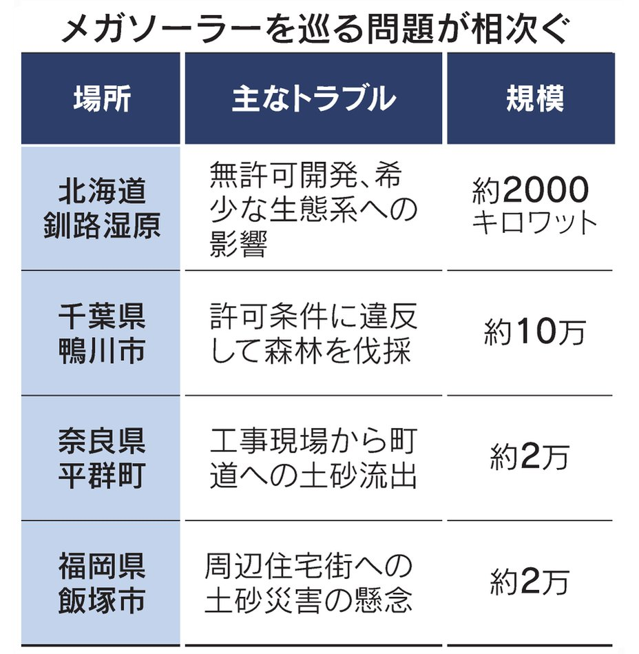
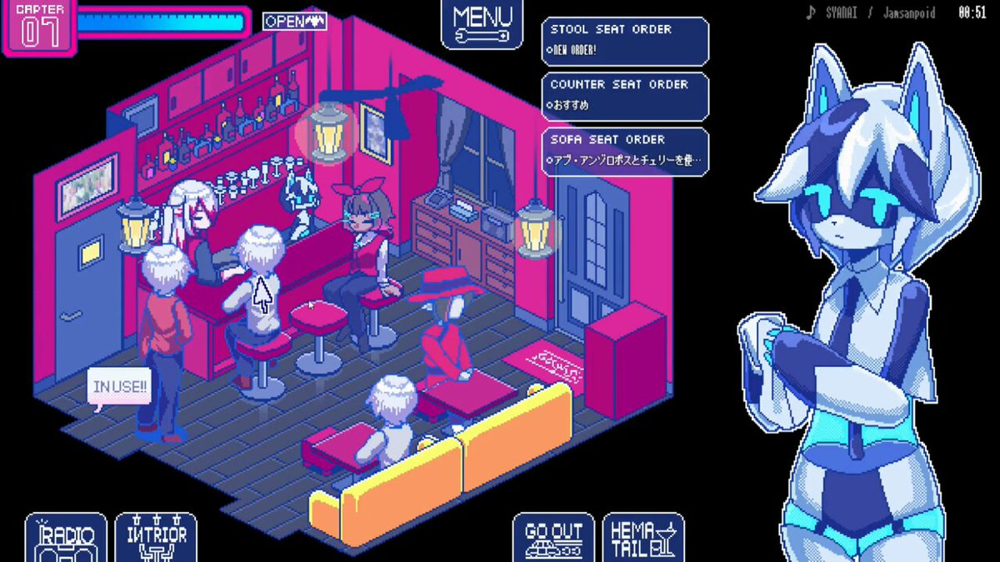
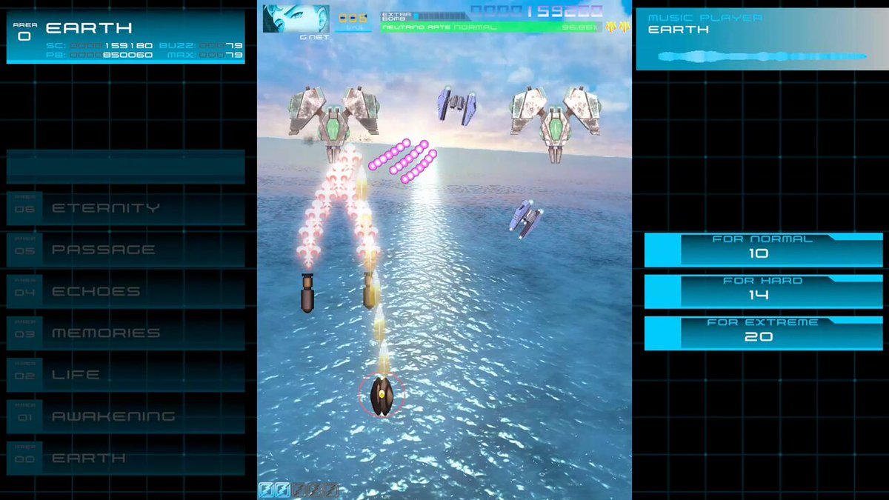
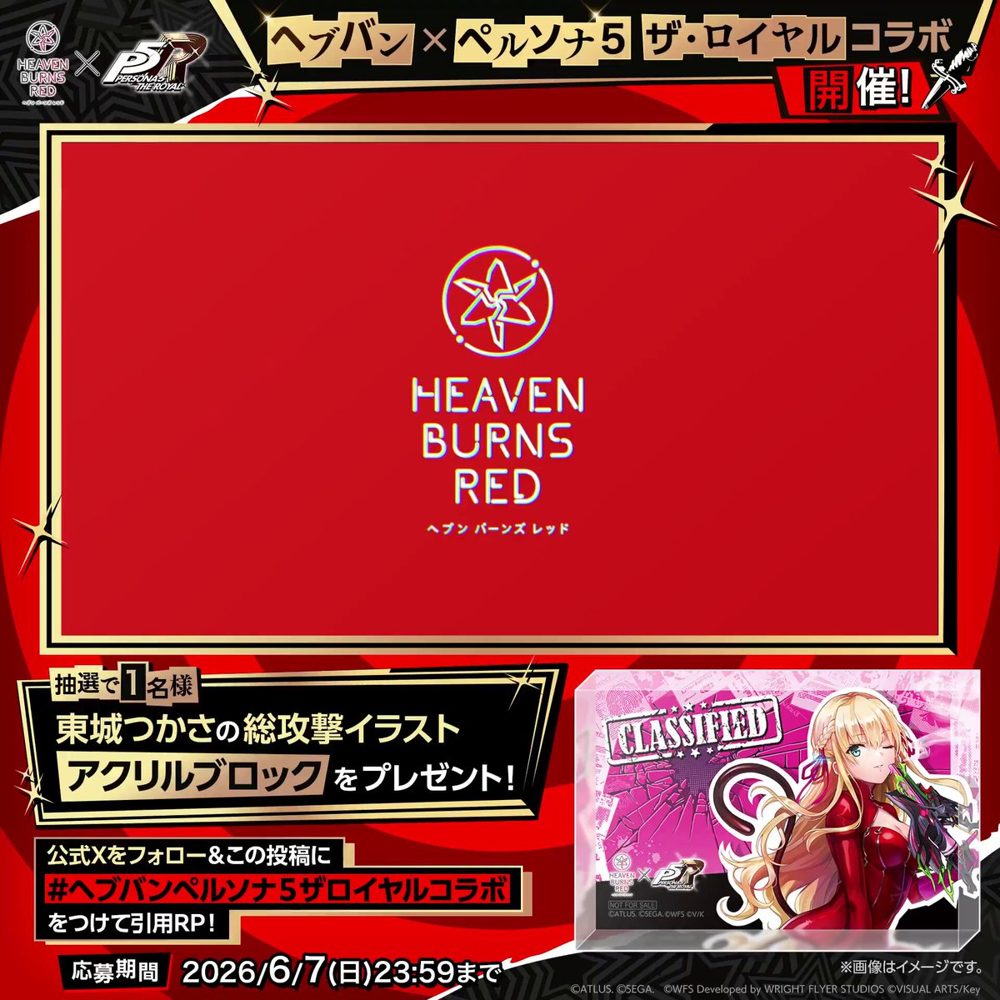
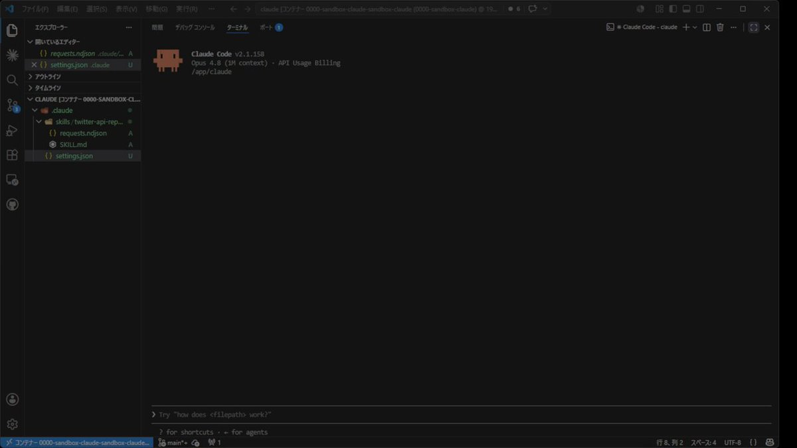
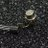
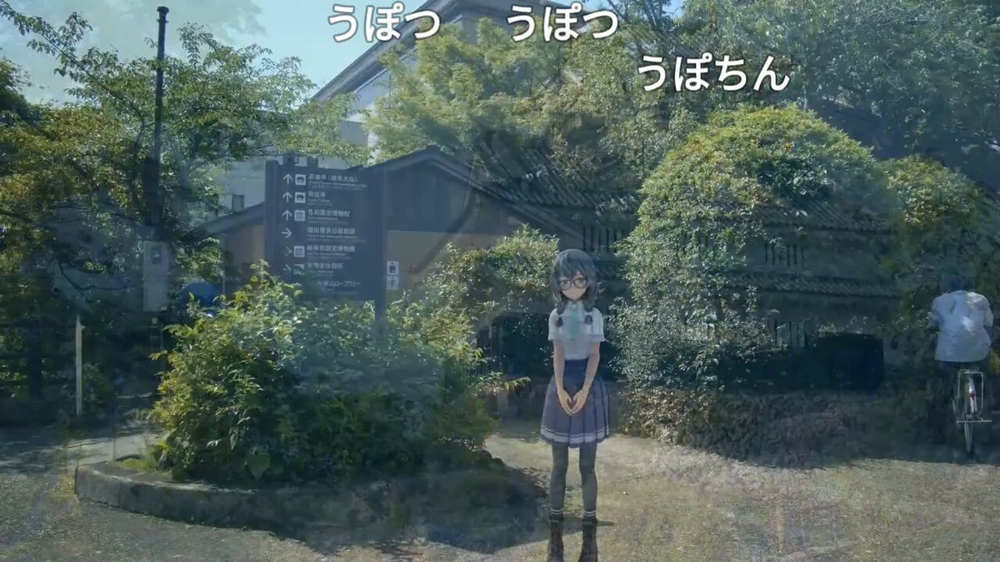
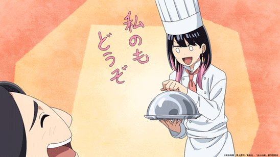
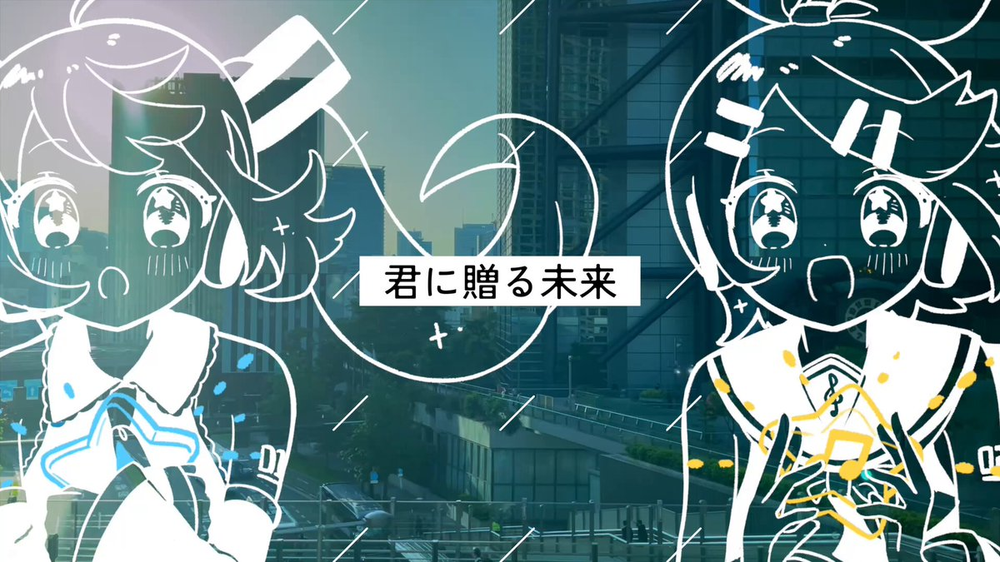
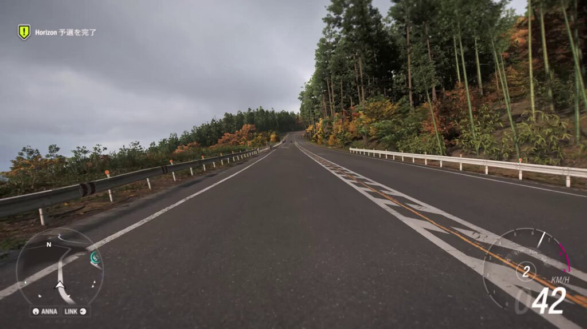

日経平均株価、米イラン交渉の進展見極め（先読み株式相場）
タイムライン要約
今日のまとめ
タイムラインの要約を以下に箇条書きで示します。
* **経済と社会動向:** 日経平均株価の市場見通しや米イラン交渉の進展見極め、6月1日からの診療報酬改定（初診料引き上げ・予約キャンセル料導入）、新日本プロレスのテレビ朝日・サイバーエージェントとの協業による再成長、嵐の活動終止、メガソーラー乱開発防止のための環境アセス拡大など、広範囲な経済・社会関連のニュースが報じられています。
* **ゲーム業界の最新情報:** 「BitSummit PUNCH」にて極彩色アクションRPG『Syndream』や探索型メトロイドヴァニア『Dust to Dust』、ドット絵が魅力のアクションRPG『Starless Umbra』など、多数の新作ゲームが試遊レポートとして紹介されています。また、カプコンがPCを最大のプラットフォームと見ていることや、Unreal Engine 6の発表予定など、ゲーム業界の技術・市場動向にも注目が集まっています。
* **社会課題と災害情報:** エリン・ブロコビッチ氏がAIデータセンター建設の「透明性欠如」を批判し住民報告マップを公開した他、世界の文化財を脅かすカビの繁殖や金の輸出急増（密輸の可能性）といった社会課題が取り上げられています。また、台風6号（チャンミー）が沖縄・奄美に接近しており、西日本・東日本への影響も懸念され、厳重な警戒が呼びかけられています。
* **経済と社会動向:** 日経平均株価の市場見通しや米イラン交渉の進展見極め、6月1日からの診療報酬改定（初診料引き上げ・予約キャンセル料導入）、新日本プロレスのテレビ朝日・サイバーエージェントとの協業による再成長、嵐の活動終止、メガソーラー乱開発防止のための環境アセス拡大など、広範囲な経済・社会関連のニュースが報じられています。
* **ゲーム業界の最新情報:** 「BitSummit PUNCH」にて極彩色アクションRPG『Syndream』や探索型メトロイドヴァニア『Dust to Dust』、ドット絵が魅力のアクションRPG『Starless Umbra』など、多数の新作ゲームが試遊レポートとして紹介されています。また、カプコンがPCを最大のプラットフォームと見ていることや、Unreal Engine 6の発表予定など、ゲーム業界の技術・市場動向にも注目が集まっています。
* **社会課題と災害情報:** エリン・ブロコビッチ氏がAIデータセンター建設の「透明性欠如」を批判し住民報告マップを公開した他、世界の文化財を脅かすカビの繁殖や金の輸出急増（密輸の可能性）といった社会課題が取り上げられています。また、台風6号（チャンミー）が沖縄・奄美に接近しており、西日本・東日本への影響も懸念され、厳重な警戒が呼びかけられています。
タクシードライバーはラジオ好きが多いとはいうけれど、これはこれでファインプレーだ。
玉木雄一郎（国民民主党）
@tamakiyuichiro
朝、ラジオに出るためにタクシーに乗って「ニッポン放送お願いします」と言ったら、運転手さんが私だと気づいて
「玉木さん、上念さんと出る文化放送じゃないの？今、ラジオ聞いてたよ」
と教えてくれ、あやうく有楽町のニッポン放送に向かうところを、今、浜松町の文化放送に向かっています。
夢と現実のハザマで、自分自身の問題と向き合う。極彩色アクションRPG『Syndream』試遊レポ＆ミニインタビュー【BitSummit PUNCH】
https://
gamespark.jp/article/2026/0
6/01/167196.html?utm_source=twitter&utm_medium=social&utm_content=tweet
…
やはり頑張ってる後輩のニュースとなると声が大きくなるねぇ。 #アップ738
【診療報酬きょう6月1日改定】
初診時の料金190円引き上げ
https://
nikkei.com/article/DGXZQO
UA216IL0R20C26A5000000/?n_cid=SNSTW005&n_tw=1780266314
…
予約キャンセル料の徴収も可能に。患者の都合で診察直前に予約取り消しとなった場合に請求される可能性があります。
初診190円上げ、6月1日に診療報酬改定 予約キャンセル料を徴収可に
霊媒師と協力し、“霊体研究施設”から脱出せよ！フランス発『Dust to Dust』は「憑依」がカギを握る探索型メトロイドヴァニア【BitSummit PUNCH】
https://
gamespark.jp/article/2026/0
6/01/167195.html?utm_source=twitter&utm_medium=social&utm_content=tweet
…
東京モノレールの機関車？？＞RP
“懐かしのあの頃”の雰囲気が満載！ド魅力的なドット絵が輝くアクションRPG『Starless Umbra』【BitSummit PUNCH】
https://
gamespark.jp/article/2026/0
6/01/167194.html?utm_source=twitter&utm_medium=social&utm_content=tweet
…
特定旅客は7700でしかも定期列車併結だったが、それからしばらくして7000系パノラマカーをチャーターして結婚式やった夫婦がそれなりにいると聞いた。
えむけー
@MEi12KaiMio
昔の名鉄はこんな感じオタクがいた
※有名な特定旅客です。
２ちゃんねる由来のもので台風コロッケなんていう、なぜか台風が来るとコロッケを食べるなんてのもあったなぁ。 #アップ738
エリン・ブロコビッチ氏、AIデータセンター建設の「透明性欠如」を批判 住民報告マップも公開
エリン・ブロコビッチ氏、AIデータセンター建設の「透明性欠如」を批判 住民報告マップも公開
「傘がさせない」は笑うしかない。時速40km爆風サーキュレーター、15％OFFです
「傘がさせない」は笑うしかない。時速40km爆風サーキュレーター、15％OFFです | ギズモード・ジャパン
エリアメールの音がした。 #アップ738
新日本プロレス再成長へ テレビ朝日とサイバーエージェントがタッグ
https://
nikkei.com/article/DGXZQO
UC292ZS0Z20C26A5000000/?n_cid=SNSTW005&n_tw=1780228727
…
新日本プロレスは1970～90年代、テレビ朝日の地上波中継とともに成長しました。株式を売却するブシロードの木谷高明社長は「テレビ朝日への大政奉還」と語ります。
新日本プロレス再成長へタッグ テレ朝とサイバー、配信軸に多角化へ
カプコン「最終的にはPCが最大のプラットフォームになりゲーム業界をリードする事になる」 #ゲーム業界
カプコン「最終的にはPCが最大のプラットフォームになりゲーム業界をリードする事になる」 - オレ的ゲーム速報@刃の記事ページ
jin115.com
オシャレなティッシュケースの作り方
使わない紙袋を、パタパタ折っていくと…… まさかの完成品が230万再生「素晴らしいアイデア」「マネさせていただきます」
（記事URLはリプから）
使わない紙袋を、パタパタ折っていくと…… まさかの完成品が230万再生「素晴らしいアイデア」「マネさせていただきます」（1/2） | ハンドメイド ねとらぼ
4Gamerの1週間を振り返る「Weekly 4Gamer」，2026年5月25日〜5月31日
https://
4gamer.net/s/G004099.2605
31003
…
先の話ですが，今週土曜日にはゲームイベント「Summer Game Fest 2026」が開幕します。もう6月なのね。
死に戻る世界で唯一の武器は「知識」だけ。『60病』試遊レポ＆インタビュー【BitSummit PUNCH】
https://
gamespark.jp/article/2026/0
6/01/167193.html?utm_source=twitter&utm_medium=social&utm_content=tweet
…
死んで覚える脱出ゲーム。リセットされる世界で「知識」だけが武器になる
Access Accepted第863回：「Unreal Engine 6」で見えてきたEpic Gamesの統合戦略とゲーム産業の未来
https://
4gamer.net/s/G003691.2605
30002
…
Unreal Engine 6の詳細は，6月16日から18日までシカゴで行われる「Unreal Fest Chicago 2026」でアナウンスされる予定だ
トウカイのクマさんがリポスト
今週の長月さん(6/1-6/7)
イランも戦闘終結の合意案を修正か タスニム通信報道
イランも戦闘終結の合意案を修正か タスニム通信報道
きっと事前にどこまで話してOKとか決めておくんですよ。それで前回は揉めた？
世界の至宝を脅かす乾燥に強いカビ
https://
nikkei.com/article/DGXZQO
SG29DC70Z20C26A5000000/?n_cid=SNSTW005&n_tw=1780232085
…
レオナルド・ダ・ヴィンチの自画像に現れたシミ、ツタンカーメン王の埋葬室の壁に広がる斑点…。
低湿度環境で繁殖するカビが文化財を蝕んでいます。保存の努力が裏目に出てしまっているのです。
世界の至宝を脅かす乾燥に強いカビ 対策が裏目に
シャインポストオーケストラライブ、
・着席での鑑賞
・ペンライト可
・拍手は指揮者が手を降ろして客席を向いたタイミング
・原則静かに鑑賞。曲により出演者から手拍子の煽りや声を出してのコール&レスポンスあり
ということだけど、一歩前ノセカイとかどうなるんだろ？
シャインポスト Orchestra LIVE
metroberry.jp
LLM、正解を知ってる方が、フレームワークや手法が確立したシステムの中で何かを作る、しかもモデルがそれらの分野を熟知してる場合は成り立つから、ウェブアプリを作るのには、本当に便利ですよね。動けばいい、細かいところは無視できるならば
メガソーラー乱開発防止へ環境アセス拡大 発電出力1.5万キロワット以上に
https://
nikkei.com/article/DGXZQO
UA2778X0X20C26A5000000/?n_cid=SNSTW005&n_tw=1780231638
…

『タスクバーヒーロー』出品中アイテムを一部削除へ。6月1日午後9時までに取り下げていない場合“復旧は困難”とアナウンス
https://
gamespark.jp/article/2026/0
6/01/167192.html?utm_source=twitter&utm_medium=social&utm_content=tweet
…
Steam側からサーバー利用基準を満たすように要請を受けたとしています。
PCのゲームをインストールしてプレイするのがインディーゲーム以外に無くなった気がする。
SteamやEpicやXBOX PASSとか、販売プラットフォームのランチャー経由でオンライン認証されるのばかりで、実行ファイルをインストールする大型タイトルって無くなってない？
GOGが微妙に最後の砦？
古の半導体のマスクデータはGDSII形式で、四角とポリゴンの集合で円の定義がなかったけど、今はOASISで、回折効果を考慮したマスクデータには曲線必須で形式が定義されてます、とか。そこから必要が生えてきたのか、みたいな
嵐、26年半の活動に終止符 ファンに感謝「それぞれの道歩む」
嵐、26年半の活動に終止符 ファンに感謝「それぞれの道歩む」
日経平均、最高値圏でもみ合いか 今週の市場・予定
日経平均、最高値圏でもみ合いか 今週の市場・予定
日経平均6万円時代の株式投資対談 割安から成長へ期待は変わるか
日経平均6万円時代の株式投資対談 割安から成長へ期待は変わるか
不眠ロス19兆円取り戻せ 1日から診療科名に「睡眠障害」、武田など新薬
武田薬品
アドバンテスト、株価60倍を支えた15年前の「略奪買収」
アドバンテスト、株価60倍を支えた15年前の「略奪買収」
建設業の退職金｢40年働いても400万円｣ 人材呼び込みへ引き上げ検討
建設業の退職金｢40年働いても400万円｣ 人材呼び込みへ引き上げ検討
ロンドンの住宅価格急落、増税で外国投資家離れ 価格抑制へ各国規制
ロンドンの住宅価格急落、増税で外国投資家離れ 価格抑制へ各国規制
会計監査の信頼性確保へ、政官民が再発防止を検討 ニデック不正受け
会計監査の信頼性確保へ、政官民が再発防止を検討 ニデック不正受け
実はバリュー株も強いニッポン 続く最高値、村田製やパナHDが躍進
実はバリュー株も強いニッポン 続く最高値、村田製作所やパナソニックHDが躍進
台湾国民党主席が訪米開始 トランプ氏に面会打診も成果なければ逆風
台湾国民党主席が訪米開始 トランプ氏に面会打診も成果なければ逆風
スタンダード企業の営業増益額、首位は千代田化工 AIの恩恵銘柄も
決算:スタンダード企業の営業増益額、首位は千代田化工 AIの恩恵銘柄も
企業のAI活用遅れ、部長級の6割「離職理由に」 チェンジHD調べ
企業のAI活用遅れ、部長級の6割「離職理由に」 チェンジHD調べ
採用選考解禁、内定率はや8割 学生・企業負担増で三菱地所はインターン廃止
採用選考解禁、内定率はや8割 学生・企業負担増で三菱地所はインターン廃止
週休3日・ノー残業でも給料維持 新興のスパイラルAI、AI活用で
週休3日・ノー残業でも給料維持 新興のスパイラルAI、AI活用で
リジスさんがリポスト
【台風情報】
6月1日(月)3時現在、台風6号(チャンミー)は暴風域を伴って沖縄県の宮古島の南東約260kmを北上中。
今日は沖縄本島や奄美に接近し危険な暴風や大雨をもたらすため厳重に警戒を。
明日2日(火)〜3日(水)には西日本や東日本に接近して大雨となるおそれがあります。
https://
weathernews.jp/news/202606/01
0011/
…
むくり。
いるか@心が酒びたっているんださんがリポスト
吉祥寺で開催する「国旗損壊罪と「表現の自由」についてのシンポジウムは今週末（6月7日・日曜）。
登壇は憲法学者の志田陽子さんと、前衆院議員の松尾あきひろさん。関心のある皆様はぜひ！
@YyYySinger
@matsuo_akihiro
うぐいすリボン /NPO Uguisu Ribbon
@jfsribbon
6月7日（日）・8日（月）は、国旗損壊罪についての、こちらの講演をぜひ！
シンポジウム「国旗損壊罪を考える」
講師：志田陽子さん（憲法学者）、松尾明弘さん（弁護士／前衆院議員）
6月7日（日）15時から
武蔵野商工会館 ゼロワンホール
https://
peatix.com/event/4960742/
view
…
MLCCや武蔵精密のキャパシタとかフジクラと同じ運命をたどると思うけど。。
ＡＩサーバーは進化すればＤＣ内で置き換えがあるけど、キャパシタは一度入れたらそれっきり？
【悲報】医療業界、ガチで限界・・・物価高の影響で診察料引き上げへ・・・ #酷い話・事件
【悲報】医療業界、ガチで限界・・・物価高の影響で診察料引き上げへ・・・ - オレ的ゲーム速報@刃の記事ページ
jin115.com
浜松の渚園。ゆるキャンで見た400円は本当に安いとか、11になっても談笑する方々がいて、都市部？はキャンプの常識が違うんだなとか、羽虫がテントに入っててよく眠れなかったなとか。
こういうのを見ると、ハードウェアはゴミでしかないのだなと。メモリやSSDを、ハイパースケーラがai需要対応で長期契約で単価10倍でも買いますして、株価がとんでもないことにをリアルタイムで見てると、ほんとゴミ…
何かズレを感じると思ったけど、データセンタ１つで原子力発電所の発電量を飲み込む、そんな話を聞いてる今に、こんな小さな最小単位の試験管の実験のようなケースを見て、うんぬん、という、試験管と工業生産規模の根本的な違い、そこが認識できないのか？、が違和感の元なのかな。
ヤマダHD、村上家が迫った資本効率改善 1300億円売却ににじむ本気
ヤマダHD、村上家が迫った資本効率改善 1300億円売却ににじむ本気
コンビニ店員さん(三宅日向)からいただいたVELO
引っ越しが11日に延期になったのでマジでやる気がなくなりました（やらねばならぬ）
生活保護でも社会復帰を目指す人
子供を育てる人は、全力で応援したい
問題はそこじゃないから
貧困の連鎖を努力で断ち切って欲しい
早くに親を亡くした俺にだって出来たんだから
kuro｜発達障害でも夢を掴む
@fukushi_kuro
生活保護だけど、英検を受けてきました。
「税金で寝てるだけ」みたいに馬鹿にされるけど、最低限の生活費から参考書代や受験料を削り出すのは、正直かなりキツいです。
遊んでなんかいない。
社会復帰したくて、少しずつでも前に進もうと努力しています。
ホモを正当化するために7年間で住宅ペアローン3回の設定は余りにガバすぎ
見栄張らずに賃借の信用通った設定にしておけば良かったのに
俺だったら100%入居断るけどな
まるもち1y3m+1y0m
@maru_mozzi
女性同士で3回目の住宅購入にチャレンジ中なのだけど、不動産業界の変化をかなり感じてる。
1回目(2019年)
「え？女性同士で家を買う？？ペアローンで？ちょっと初めてで……ごにょごにょ」
2回目(2024年)
「女性同士でペアローン？別の担当で前例があったような…」
3回目(2026年)
「この業界に→
【マンションは必ず売り抜けること】
終の住処だなんてとんでもない
35年ペアローンなんて問題外
設備から腐って立ちいかなくなる
区分所有権だけで自分たちで処分も決められないんだから
管理組合は外国人、所在不明、厄介所有者に太刀打ち出来ない
せいぜい築30年までだよ
ブリリアント
@PageTurner_and
ちょっとこれは問題作すぎたかもしれません…… x.com/pageturner_and…
#dnb / #Metalheadz
Blade - Bye The Bye
https://
youtube.com/watch?v=al4BPB
Ef4mc&list=PL_F42GZ969hiF-tWFt6DFT0O0l_-BEym-&index=7
…
"We welcome Blade back to Metalheadz for his second release, the 4 track 'Times Gone Bye EP' arriving on Metalheadz Platinum vinyl."
#dnb / #VRecordings
Paul T & Edward Oberon, Brodie & Enamie - Mash Up The System
https://
youtube.com/watch?v=R-ji2e
Aowwg&list=PL_F42GZ969hiF-tWFt6DFT0O0l_-BEym-&index=6
…
#dnb / #VRecordings
Zero T & Surreal - All I Need
https://
youtube.com/watch?v=qOuJA_
skW7A&list=PL_F42GZ969hiF-tWFt6DFT0O0l_-BEym-&index=5
…
#dnb #hardstep / #OmniMusic
Deadfall - Reflections
https://
youtube.com/watch?v=kRJeNP
vpTpE&list=PL_F42GZ969hiF-tWFt6DFT0O0l_-BEym-&index=4
…
"Omni Music welcomes the talented Deadfall back to the label with 4 new atmospheric jungle cuts."
#dnb / #Positiva
Sub Focus - Elevate (SOTA remix)
https://
youtube.com/watch?v=RnRBKS
hU85A&list=PL_F42GZ969hiF-tWFt6DFT0O0l_-BEym-&index=3
…
#dnb / #ShogunAudio
Alcemist, DRIIA - Search Deep
https://
youtube.com/watch?v=sCWH-H
GWoec&list=PL_F42GZ969hiF-tWFt6DFT0O0l_-BEym-&index=2
…
「退勤して車に乗ろうとしたらお金置かれてたんだけど…なにこれ？」 → 衝撃の原因が判明ｗｗｗｗｗ #雑談・その他の話
「退勤して車に乗ろうとしたらお金置かれてたんだけど…なにこれ？」 → 衝撃の原因が判明ｗｗｗｗｗ - オレ的ゲーム速報@刃の記事ページ
jin115.com
7年も前の記事なので、今は事情が変わってるかもだけど。
>八重洲地下街（株）は非上場で、大株主がいる。その1つは大丸だ。そして、ヤンマーと創業者である山岡家一族である。
意外な子会社 八重洲地下街｜東京駅前を占める「大阪」
東京ラーメンストリートは一番街なので確かにJR東海の子会社による運営だけど、「東京ラーメン横丁」はヤエチカなので八重洲地下街株式会社の施策で、JR東日本は絡んでないのでは…？八重洲地下街って大丸・ヤンマー資本だったはずだけど、今はJRも参画してる…？
https://
prtimes.jp/main/html/rd/p
/000000005.000091133.html
…
ウラジミール・アヤトラ・トランプ
Aaron Rupar
@atrupar
トランプのTruth Socialでのここ1時間ほどの投稿は完全に狂気の沙汰だ。この絶え間ない狂気を味わってみろ。
モスクの解体撤去以外の方法はないのです
市街化調整区域に無許可で、再三再四の中止要請を無視し、自治体に虚偽の抗弁を行ってモスクを建設し、今さら「解体する金がない」で許される事はない
行政代執行で解体撤去し、費用負担はあなた達に求める他ないでしょう
Pakistan Embassy Japan
@PakinJapan
駐日パキスタン大使館は、在日パキスタン人全員に対しモスクの建設を含むあらゆる事項において、日本の法律を遵守するよう強く求めます。いかなる建設物も地方自治体から必要な許認可を得た後にのみ着手することが不可欠です。
関電社長、電力需要増で｢LNG火力新設急ぐ｣ 40年に電源容量3割上げ
関西電力・森望社長、電力需要増で「LNG火力新設急ぐ」 2040年に電源容量3割引き上げ
#dnb #jazzstep / #Hoapital
Zero T, Steo & Onj - Onslaught
https://
youtube.com/watch?v=NP_DTx
70QNc&list=PL_F42GZ969hiF-tWFt6DFT0O0l_-BEym-
…
The North QuarterからのリリースでおなじみなZeroTとジャズピアニストOnjとのユニットが、Hospital30周年記念としてリリース。
半導体製造装置SCREEN、TSMCも頼る個別化・効率化
半導体製造装置SCREEN、TSMCも頼る個別化・効率化
日本テレビ、衛星画像から映像作成 気象情報など分かりやすく
日本テレビ、衛星画像から映像作成 気象情報など分かりやすく
モータースポーツで日本車開発 トヨタのGRヤリス、レースが実験場
モータースポーツで日本車開発 トヨタのGRヤリス、レースが実験場
別に見かけてないけど見かけたらこれ絶対しんどいって怯えてるツイート。Doroがウッシッシの表情で全然当たらんローソンの餃子無料券に応募してるツイート
東北大学がシンクタンク、AIやロボ研究を分析 経済安保で政府と連携
東北大学がシンクタンク、AIやロボ研究を分析 経済安保で政府と連携
給付付き税額控除「給付先行で」52％ 日経世論調査
給付付き税額控除「給付先行で」52% 日経世論調査
こいつら、歌ってると思いません？
何が音楽禁止だか
要するに企業は商品を生産するだけじゃダメで、人間を雇う事で商品を買ってくれるお客様も同時に生み出していかないと経済は維持できないという事。これに対して「いや失業者はなんか新しい仕事を生み出せばいいだけの事～」とか反論ありがちだけど、じゃあ実際新しい仕事ってなんだよ。そんなもん法則
今はこうした凶行を報じ続けるんだ
英国の失敗事例を振り返れば、やがてこれらは報じられなくなる
そして報じた者、犯罪被害を訴えた者が投獄されるようになる
そして東京都知事はじめ各地の自治体首長が帰化人ムスリムになっている
この失敗を大至急学んで、絶対に同じ轍を踏まない事だ
砂川 泉
@Izumi_Sunagawa
四国のお遍路の仏像を破壊
墓石300基以上を倒壊
逮捕されたナイジェリア人
【不起訴】
はぁ？？？？？？
ダービー終わった後そのまま寝てしまったようでいま起きた
遙子さんんんっ ざす ねゆ
たしかジェンセンが「ダリオのAI脅威煽りなんかに乗せられるなよｗｗダリオはAIの専門家にすぎなくて経済の事なんか分かるわけないｗｗAIで経済がどうなるかは経済学者に訊けよｗｗ」とか言ってたと思うが、実際に経済学者がAIのせいで経済崩壊せざるを得ない事を証明してしまったという。というのもす
TJO
@TJO_datasci
これ、感覚的にはだいぶ前から分かり切っていた話だとは思う x.com/jackcoder0/sta…
『貧乏神が！』全巻「100円」の超お得セール！全16巻「7,391円」→「1,600円」！アニメ化もされた、笑って泣けるドタバタギャグ！『双星の陰陽師』助野先生デビュー作 #漫画・アニメ等
『貧乏神が！』全巻「100円」の超お得セール！全16巻「7,391円」→「1,600円」！アニメ化もされた、笑って泣けるドタバタギャグ！『双星の陰陽師』助野先生デビュー作 - オレ的ゲーム速報@刃の記事ページ
jin115.com
天安門事件は日本のメディアも大問題として取り上げる事がある
だが、それより遥かに犠牲者が多く、残酷な証拠も大量に残っていて、何よりリアルタイムで処刑が続いているイラン・イスラム政権の悪行にメディアは一切触れない
報じる内容はこの政権の公式発表のみ
どういう事なのだ？？

yan zibian
@YZibian
中国人必须明白、日本早已不是中国人的敌人、如今屠杀中国人、奴役中国人的是中共！
中共の装甲車は、一方で前進しながら、平和的な抗議を行う中国人大学生に向けて発砲し、ビデオでは誰かがその場に倒れる様子がはっきりと見える。
この街灯 橋のとこの2本しかなかったような
現地調査かなあ
146万人だけの島を作って外界から絶てばいいんじゃない？
無職詩人
@mushokulibro
ひきこもり146万人とか聞くと驚く人いるけど、逆に146万人もいるなら個人の問題じゃなく社会設計の問題だろ。100万人超えの現象を全部「甘え」で説明するのは無理がある。週5日8時間労働に適応できない人が大量発生してるなら、人間がおかしいんじゃない。その働き方の方がおかしいんだよ。
大勢のレイプ被害者達に「証拠がない黙れ」などと罵倒を続けた連中だぞ
まともな人間がいるはずがない
小森屋
@komoriya81
「親の通夜より嵐のライブが優先は当たり前！通夜なんて代わりはいる！ライブは人生かけてる趣味！親も喜んでる！」
↑
これに賛同してる女、絶対に「妻が急に産気づいたんですが予定通り10年追いかけてる〇〇坂アイドルの卒業ライブ行きます。人生賭けてるんで」とかいう夫は叩きまくると思う。
「タイの入国規則では、ビザ免除や観光ビザで入国する外国人は、1人あたり2万バーツ以上、または家族で4万バーツ以上の資金を携行している必要があるとされている…当局によると、これらの資金証明は原則として「現金」で確認される」
タイ入国の際は現金をお忘れなく！ 入国審査で抜き打ちチェック。入国拒否者増加傾向とも。 | タイニュース・クロスボンバー（X-bomber Thailand）
これが史上初めてロシアに隷属し、イランに降伏した米国大統領、ウラジミール・アヤトラ・トランプの勤務状況
Harry Sisson
@harryjsisson
トランプは今日、また精神的な健康問題を起こし、オンラインで50回以上投稿しました：
午前11:15 - ケネディ・センターに自分の名前を付けられないと言った裁判官を攻撃
午前12:03 - キャンセルしたアーティストの代わりにアメリカ250周年イベントでパフォーマンスとスピーチをするかもしれないと言う
国民・玉木代表、あの大人気ゲームを名指し批判「子どものためにも規制が必要。tiktokよりやばい」 #政治
国民・玉木代表、あの大人気ゲームを名指し批判「子どものためにも規制が必要。tiktokよりやばい」 - オレ的ゲーム速報@刃の記事ページ
jin115.com
アニメ見る気持ちじゃない時に見てつまんねーって言いたくないのでアニメ見てない。
Android 17 QPR1 Beta 3 にPixel 10 Proを更新したところ、Outlookアプリが立ち上がらなくなってしまったので、しばらく仕事のメールのお返事が遅くなりそう。困ったな
再発確認のために何分も延々と2秒あけずに線を入れ続ける労働をしている(線の基礎練習を兼ねているw)
渡辺浩弐さんがリポスト
40度なのに全然悪酔いしない、すごい！
確かに胃が燃えるような感じはするけど、思考がまともだ。
レーズンバターと一緒に嗜みたかったなぁ……最近レーズンバターって売ってないんですね。
つくるしかない。(割と簡単に作れるのは知ってる)
ここ何日か、iPad+Apple Pencilでのお絵描き練習ソフトでしばらく描いてると突然ストローク入力が入らなくなる現象を調査している
発生したら2秒ぐらい手を休めるだけで回復することまでは判明している
なんだろうこれ
(延々と調査ログ仕込んでClaude Codeに分析・仮説検証させている)
Wordle 1,808 4/6
ｵｲｼｮ! \ｵｲｼｮ!/ ｵｲｼｮ! \ｵｲｼｮ!/ ｵｲｼｮ! \ｵｲｼｮ!/ ｵｲｼｮ! \ｵｲｼｮ!/
今月はね！一日からね！飛ばしていきますよ！いいっすか！それには今日！新規面談もろうたら！一本目粘って！とにかくお客さんと勝負して！今日一日ね！目一杯やってください！
#ｵｲｼｮをポスト
月次朝礼
わずか3秒で脱着できる後付け用の電動アシストユニット。大荷物も運べる
わずか3秒で脱着できる後付け用の電動アシストユニット。大荷物も運べる | ギズモード・ジャパン
▼応募規約（必読）
ヘブバン×ペルソナ５ ザ・ロイヤルコラボ ネタバレ解禁キャンペーン応募規約
◤◢◤ネタバレ解禁記念◢◤◢
#ヘブバンペルソナ５ザロイヤルコラボ
イベントストーリーのネタバレが解禁！
#ヘブバンペルソナ５ザロイヤルコラボ感想
で感想や好きなシーンを投稿しよう！
動画やスクリーンショットの投稿も歓迎
抽選でポストカードセットを5名様にプレゼント
誕生日公演開催
本日6/1(月)17時より、誕生日限定称号が手に入る
「仁花子 誕生日公演2026」も開催いたします
引き続き、 #劇団Eden #舎人仁花子 をよろしくお願いいたします
#ユメステ
左利きのエレンもあかね噺も客の話してるから好きなんですよね。漫画書いたり、アイドルしてのしあがる系の作品で客の話描かないのはしょーもないと思ってるので。
Discord誕生日お祝いキャンペーン
#ユメステ 公式Discordで
誕生日お祝いキャンペーンに参加すると
抽選で5名様に「SP撮影フィルム【舎人 仁花子】」を
1つ贈呈のCP実施中です
Discordはこちら
https://
discord.gg/FrkuGg4yQD
是非チェックしてください
#舎人仁花子 #劇団Eden #ユメステ
BIRTHDAYピックアップガチャ
さらに、誕生日を迎えた #舎人仁花子 をピックアップしたアクターガチャも各種登場いたしました
お誕生日パックとあわせてゲーム内にてご確認ください
#劇団Eden #ユメステ
銀行「投資信託しませんか？我々プロにお任せください！」 母「150万円やります！」 → 12年後、とんでもない額になって返ってくる・・・ #雑談・その他の話
銀行「投資信託しませんか？我々プロにお任せください！」 母「150万円やります！」 → 12年後、とんでもない額になって返ってくる・・・ - オレ的ゲーム速報@刃の記事ページ
jin115.com
【Birthday Night】【舎人 仁花子】ガチャ
また、新たにパジャマ姿が描かれた期間限定SSRポスターが登場する
【Birthday Night】【舎人 仁花子】ガチャ
も開催いたしました
こちらのイラストには、ちょっとした秘密が隠されています...！
#舎人仁花子 #劇団Eden #ユメステ
お誕生日パック3rd登場
本日の0時より【仁花子】の誕生日を記念した
ホームスキンなどが入った
「お誕生日パック3rd【舎人 仁花子】」も登場しております
#舎人仁花子 #劇団Eden #ユメステ
トウカイのクマさんがリポスト
今年も誕生日を迎えることができました！
いつも温かいご声援をありがとうございます！
あたりまえじゃないこの日々を大切に、これからもお仕事頑張ります！
私の声が、すこしでもみなさんの笑顔に繋がっていますように
【ネタバレ解禁】
本日より以下のX投稿のネタバレが解禁となりました。
・ペルソナ５ ザ・ロイヤル コラボイベントストーリー
「Operation Takanawa Mementos ～Wake Your Heart～」
ガイドラインに沿って投稿していただけます。
https://
wfs.games/terms/contents
_guideline_heavenburnsred_streaming.html
…
#ヘブバンペルソナ５ザロイヤルコラボ
「ヘブンバーンズレッド」配信／投稿ガイドライン
Happy Birthday『舎人 仁花子』
本日6月1日は
#劇団Eden『 #舎人仁花子 』の誕生日です
よろしければ皆さまもご一緒にお祝いいただけると幸いです
#ユメステ #ユメステFAN
山人@耳すまさんがリポスト
6月1日は白渡小詠（anemoi）の誕生日です。
【小詠】「お、お誕生日のケーキですか？」
【小詠】「でも、私、祝われる資格ないですよ」
【小詠】「……それでも祝いたい？」
【小詠】「ぴぃー……強情ですね……」
【小詠】「……ぴひひ、では、ありがたく頂戴しますね」
#アネモイ
5月32日
渡辺浩弐さんがリポスト
2024年に朝イチ抽選並んで一番いい賞を一番に引いて、並んでるお客さんみんなにも祝福してもらい、今更「あんまり知らないからもっと欲しい人に……」とも言えずもらったＴシャツ。寄贈しました。そのうち、これを着て接客している先生が見られるかも。かも。
Benさんがリポスト
⋱第8話放送記念⋰
⠀
プロキオン先生役 #平川大輔 さん
ペガスス先生役 #杉田智和 さん
ベテルギウス先生役 #森嶋秀太 さん
ポラリス先生役 #小坂井祐莉絵 さん
サイン付き第8話台本を
抽選で1名様にプレゼント
⠀
@witch_classroom
をフォロー
この投稿をリポスト！
締切：6/6(土)23:59まで
日本経済新聞 電子版（日経電子版）さんがリポスト
「サブカルの聖地」ヴィレッジヴァンガード本店、40年の歴史に幕
「サブカルの聖地」ヴィレッジヴァンガード本店、40年の歴史に幕
氷の城壁9話
勘違いの生むラブコメディは面白いんだけど、いつまでも続くものではなく、お互いが敵であることを理解した上で4人で折り合いをつけていく方向に早く移って欲しい。
宝ものヘルムほんとに強いな
なるせひろのりさんがリポスト
国旗損壊罪が可決される見込みです。
結局、反対していたのは、委員会の中では岩屋氏だけであるにも関わらず、マスコミの印象操作で、岩屋氏の反対によって、
成立しないかのような印象を与えていました。左翼メディアの操作に気をつけないと
いけません。
MICHEE-N（ミッチー・Ｎ）さんがリポスト
謎の機関車
日立運輸東京モノレール所有のディーゼル機関車と思われるが詳細不明
日立工場から構内移動などで使用したのだろうか？
1980年 日立
えてすけさんがリポスト
#NavalHistory
#ユトランド沖海戦
本日はユトランド沖海戦110周年！
ということで、イギリス海軍の軽巡洋艦サウサンプトンを制作しました！
海戦ではドイツ艦隊に接近しながら情報を旗艦に送り続け、夜間の戦闘においては敵巡洋艦1隻を雷撃によって撃沈しました。
#まのさばネタバレ
二人がまた結びつくという将来があること前提で、あのキスのあとしばらくは、なのちゃんの顔が近づくたびに反射でちょっとぴくっ……って身を引いてしまうホノカさんが見たくて……
Torishima / INTPさんがリポスト
AIコーディングに限界があることはみんなわかってて、じゃあ人間もシステムを深く理解して制御していったほうが安全だよねというのはまあ平凡な意見でして
AIの恐ろしいのは、そういう地に足のついた平凡な議論が過去になるほど、とんでもなく手が早いということでして
なるせひろのりさんがリポスト
「ｾｷﾕｶﾞｰ!ﾅﾌｻｶﾞｰ!」で騒いでたマスコミの皆さんがトーンダウンと話題ですが、どうも備蓄分の石油が枯渇したのは中国のようで()
国をあげて急遽造設した石油備蓄基地のタンクには泥水が詰まってたらしく(『またかよ』って顔)
ただでさえ経済瀕死なのに石油でロックダウンとか無理では？

Wanjun Xie
@xie_wanjun
中国共産党の戦略的石油備蓄が枯渇し、偽造された石油備蓄に依存していると伝えられているが、それが暴露された。中国はベネズエラとイランからの石油供給の中断により、1年以上にわたり石油備蓄が枯渇している。しかし、帳簿上では中国は依然として12億トンの石油備蓄を保有している。
so cute...
やっぱりなのちゃんが成長してるの本当に美しくありがたく頼もしい
本当に美しい！！！！！！！！！！！！！
わかっているつもりで見ようとしない、まさしく傲慢だし、だからこそ自分の愚を乗り越えた妹によって姉もその愚から引き摺り出されるのが美しいんだよね……
なるせひろのりさんがリポスト
んー、マジかにゃー？
Wanjun Xie
@xie_wanjun
中国共産党の戦略的石油備蓄が枯渇し、偽造された石油備蓄に依存していると伝えられているが、それが暴露された。中国はベネズエラとイランからの石油供給の中断により、1年以上にわたり石油備蓄が枯渇している。しかし、帳簿上では中国は依然として12億トンの石油備蓄を保有している。
輿水畏子さんがリポスト
鼻血が描きたかった絵
https://
poipiku.com/13515442/13098
850.html
…
輿水畏子さんがリポスト
なのちゃんはお姉ちゃんがはちゃめちゃになってることに気づいてるだろうけど、それで踏み込まないで取り返しのつかないことになるよりは傷つけても踏み込むべきだの成長を遂げているのでおねえちゃんに逃げ場はないんだよね #まのさばネタバレ
輿水畏子さんがリポスト
ナノホノ、シェハでは起きないタイプのディスコミュ起きるからおもしろい。シェハはわからないからあなたをわかりたいので知りたいですが。ナノホノは傲慢なわかってるから(わかってない)をわからされて苦しみの姉とちゃんとしようよって妹でかわいいね(苦しみがセットで…
Lenovoのゲームボーイ風デバイスが存在していた！ でもこれはオススメできない
Lenovoのゲームボーイ風デバイスが存在していた！ でもこれはオススメできない | ギズモード・ジャパン
補足画像も置いときます（TikTokerさんのポスト）
こういう質問をされるということは妥当でないと思っておられるのだと思いますが、そうであれば具体的にどこが妥当でないと思われるのかを明記してください。Teamsのログインは私も含め多くの人が苦労するところで…
#mond_ockeghem
徳丸 浩さんが質問に回答しました | mond
love……
輿水畏子さんがリポスト
ﾊﾝﾅちゃん供養
法人特典画像全部出てから買いたかったが・・・
上伊那ぼたんの楽天ブックスの特典付き在庫枯れてて泣きアニメ
FF様がいってたユーフォアンコンのメンバーズカード 持ってたかなぁと探したら出てきたー 当初買わなかったけど後で書泉で見かけて買ったような、、
まさか共産党がMAGAだったとは想像の斜め上過ぎた
大貫剛З Україною
@ohnuki_tsuyoshi
日本共産党、ウクライナでの戦争を「対ウクライナ戦争」と言ってしまい本音をお漏らし。 x.com/pioneertaku84/…
ふぇむ(せかんど！)さんがリポスト
アレ着て来いって言ったよね #ブルアカ
【鉄道模型再び】妻「夫のエアガンを捨てたら人格が変わってしまいました。元に戻すにはどうすればいいですか？」
【鉄道模型再び】妻「夫のエアガンを捨てたら人格が変わってしまいました。元に戻すにはどうすればいいですか？」 : ハムスター速報
これは行政が意地でもモスク撤去の対応しないと、都市計画法で財産権を制限されている他の人々に説明が付かなくなる事例です。
建設途中に豚粉を撒いて資材を清めたと吹聴するのが良いと思います
妄想王らんぽ
@rampo2th
ここはやはり、ストレスを発散…い、いや、ボランティアを募ってモスクを破壊するのが妥当では無いでしょうか… x.com/kelog21/status…
金の輸出、過去最大の4兆円超に 密輸品の海外流出拡大か
金の輸出、過去最大の4兆円超に 密輸品の海外流出拡大か
線路に落ちた女子高生をおじさんたちが助ける動画が拡散→女さん「JKに触りたいだけじゃん。キモすぎ」→物議に「男が女を助けないほうがいい理由」 #酷い話・事件
線路に落ちた女子高生をおじさんたちが助ける動画が拡散→女さん「JKに触りたいだけじゃん。キモすぎ」→物議に「男が女を助けないほうがいい理由」 - オレ的ゲーム速報@刃の記事ページ
jin115.com
昔は全てサービス残業で、管理職になったら管理職手当が出るので給料が上がりました
今は残業代が出ているから、管理職になったら時間外手当が消えて給料が下がります
管理職の扱いは昔から変わっておらず、時間外勤務には手当が支給される当然の世界になっただけ
長年ずっとババだったのです
日本経済新聞 電子版（日経電子版）
@nikkei
官僚も「氷河期世代がババ引く」 管理職に昇進で年収100万円下げ
https://
nikkei.com/article/DGXZQO
UA078FJ0X00C26A5000000/?n_cid=SNSTW001&n_tw=1780173622
…
お姉ちゃんの審問がどうであったかは想像の予知だけど私もこれが良いな～～～～って思うんだよな……
今期代官山アニメ2つ目
#ルルットリリィ #上伊那ぼたん
ルルットリリィ9話 あー よき すき いい、、
輿水畏子さんがリポスト
守ってあげようとした誰か（当然うっすら妹と重ねている）のために身代わりで処刑されようとしたらガチ拒絶＆罵倒の挙句、裁判ではほぼ自供で処刑されに行かれて、今まさになのちゃんの身代わりでここにきている己の行動の正しさがぐらっぐらになるおねえちゃん、気持ちいいでしょ
#まのさばネタバレ
AVITAMINOSEさんがリポスト
【警戒】#台風6号 は暴風域を伴い北上中1日夜に #沖縄 、その後は北東に進路を変えて西～東日本の太平洋沿岸を進む見込み。
<#静岡県 への影響>
◆最接近は3日日中、大雨・土砂災害・暴風・波浪の各警報発表恐れ
◆2日朝から雨、#大雨 ピーク3日午前
◆2日夜から交通影響も（最下部）
#静岡 #台風
東海道新幹線（東京～新大阪）運行情報【ＪＲ東海公式】
@JRC_Shinkan_jp
【05/31,18:51現在】
台風6号接近に伴う運行情報について（5月31日18時30分現在）
台風6号の接近に伴う大雨または強風のため、東海道新幹線では、6月2日（火）夜間から6月3日（水）の終日にかけて、一部の時間帯、一部の区間において、急遽の運転見合わせ、行先変更、列車の運休等の可能性があります。
良すぎるな～～～～～ほんと……こっから二人が溶け合うまでものすごい時間がかかるのが悲しいけどそこを乗り越えられると信じてる……
呪い３枚スタート
ここにあるとおり、イスラム教の歌や音楽というものはごく当然に存在します
アザーン(礼拝呼びかけ)も歌です
それらは芸術として極めて高いレベルにあって、それを楽しみにイスラムの国々を回ってきたのです
国によってイスラムは全く違うモノですが「音楽禁止」なんて聞いたこともないです

Alpha Wolf
@Crazyunfill94
中国は国内のムスリムに対して非常に厳しい政策を施行しています。安全保障の名の下に、多くの宗教的慣習を禁止しています。
女性はブルカ、ニカブ、ヒジャブの着用が禁止されています。
長い髭を伸ばすことは投獄につながる可能性があります。
生きろよ、単色衒学アイコン(励ましの言葉)
輿水畏子さんがリポスト
性愛ゼロで接してた妹が自分と向き合うためだったらそこまでしてくるの、妹愛がデカいので妹への拒否感という形より自分のせいでゆがめてしまった罪悪感とかがものすごい勢いで襲い掛かってそうでかわいい、吐いたら傷つけるから吐けないね
#まのさばネタバレ
沖縄のラジオ祭ってのを東京でやっても面白いかも。 #うさがみそーれー
貝さんさんさんがリポスト
誕生日に遊佐あかねとデートした話でメッチャ惚気てくる一方で、あかねが就職か音楽かでずっとフラフラしてるのには「後輩に心配させんな」とだけ釘挿して、後は「待つよ。…いくらでも」と含みを持たせる言い方で寄り添う姿勢を見せる北杜やえか
↑
"イイ女"の理論値か？？？？
貝さんさんさんがリポスト
他人の色恋沙汰に目ざとく、首を突っ込まずにはいられない張景嵐のバックグラウンドとして描かれる、「慕っている姉を見知らぬ女(姉の恋人)に盗られたように感じていたが、姉を想う点で和解し、姉の瞳と同じ色のピアスを付けて(変わらず姉を想いながら)姉から独り立ちする姿」
↑
愛を大切にする女だ…
貝さんさんさんがリポスト
張景嵐、郡上先輩への好意を示唆しながらも、そんな彼女がいぶきに片想いする姿を想って「いぶきとの関係をハッキリさせない上伊那ぼたん」に憤るというのは正しく利他的な"愛"だし、もっと言えばそういう他人の人間関係に首突っ込んで白黒付けたがるおせっかいで愚直で優しい人間性が、好きだ…
貝さんさんさんがリポスト
上伊那ぼたん第8話、ただ二人きりで何をするでもなく酒を買い込み、河原に座り込んで過ごすだけの時間を"幸せ"と感じられる関係性にありながら、"その先"に進むことを躊躇しているような、期待するような熱視線が互いに向けられるぼたいぶの繊細な距離の儚さと美しさがさｧ!!!!!!!(突然興奮するオタク)
本日は、でBTCメンバー向け舞台探訪アワード投票最終日です。
無事に帰宅しました!!!!
ダービーの現地観戦最高に楽しかったです！
現地で見れる楽しさは馬券が外れてもそれ以上の価値が得られると改めて感じました！
本日お会いした方々、ありがとうございました！
別現場で会ったら、またよろしくお願いします！
#トゲトゲ競馬部
#日本ダービー
八重森さん、そんなペラいピンクナースコスじゃ戦っていけませんよ。マリームーンのこちらにしましょう。
細るものづくり人材 公立工業高校入試、39都道府県で「1倍割れ」
細るものづくり人材 公立工業高校入試、39都道府県で「1倍割れ」
ハンディファンに腕の疲労を奪われてきた人へ。腰掛けタイプという解放 #BuyPR
ハンディファンに腕の疲労を奪われてきた人へ。腰掛けタイプという解放 | ギズモード・ジャパン
AVITAMINOSEさんがリポスト
おっと
なささぎ
@WNe3na6nwX58571
え？
https://
niigata-nippo.co.jp/articles/-/834
951?utm_source=twitter&utm_medium=social&utm_campaign=twitter_dp&time=202605312223#textAnchorTarget
…
AVITAMINOSEさんがリポスト
【#那覇空港 閉館のお知らせ】
明日６月１日、台風により終日閉館となります。
〈詳細〉
■閉館日：６月１日（月）終日
■対象エリア：国内線・国際線含む全館
6月2日の運用は、安全を最優先に総合的に判断いたします。最新情報はHP等にて随時掲載予定です。
皆様どうか安全第一でお過ごしください
ゴミクズの集団だってことはレイプ魔擁護事件で散々見せつけられたので、何の驚きもありません
決して相手にせず、ただパキスタン人若手有志を会場に送り届けるだけです
滝沢ガレソ
@tkzwgrs
【話題】ジャニオタさん、嵐のラストLIVEと「実父のお通夜」が同日に被った結果、迷わず嵐を優先して親族からブチギレられる
「自分の親の最後くらい責任もって仕事しろや派」と「天国の父親はきっと『嵐みてきな！』と言ってくれてるし問題ないっしょ派」が大論戦に x.com/tkzwgrs/status…
ふりかえり、昨日までやった
＞ω＜さんがリポスト
Claudeやらの定額モデルが廃止になったらAPIコストが月20-30万円ぐらいかかるっていう話は正しいんだけど、一方で仕事をタスクに分割して、難易度に応じて高単価～廉価なLLMにタスクを割り当てるみたいなことができる人間だと2-3万円で済みますみたいのは普通に起きそうだな。
共産党を信仰する医師とか教授って実際にいるんだけど(系列病院)、彼ら革命ごっこ的には明らかに「敵」の側なのな
何をどこまで信仰しているのか全く分からない
深見 聡 FUKAMI, Satoshi Ph.D.
@SatoshiFukami
教授「授業に入る前に資料を配ります。日本共〇党の入党案内。入党費はたった300円。入党した人は、この授業は試験免除で100点つけます｣←学生のとき言われた
本当にありがとうございます
なるせひろのりさんがリポスト
[31日22時17分頃] 栃木県 群馬県 埼玉県 千葉県 東京都 神奈川県 山梨県 静岡県 あたりで揺れたかも… #地震
(アニメ)
https://
x.gd/dDUwQ
輿水畏子さんがリポスト
「もう私はちっちゃいなのちゃんじゃないの」 #まのさばネタバレ
ゆれ
キャバ嬢・ゆいぴすさんが推奨する『マンジャロダイエット』 現役脊椎外科医からガチで警告される
キャバ嬢・ゆいぴすさんが推奨する『マンジャロダイエット』 現役脊椎外科医からガチで警告される : ハムスター速報
AVITAMINOSEさんがリポスト
神奈川県茅ケ崎市の湘南海岸で30日深夜から31日未明にかけ、「夜光虫」によって波打ち際の水が青白く輝く現象が見られました。夜光虫は海に漂うプランクトンで、大量に発生すると夜は刺激を受けて発光することがあります。
写真特集→
https://
mainichi.jp/graphs/2026053
1/mpj/00m/040/019000f/20260531mpj00m040012000p
…
カズイの歌声カッコよくて好き
楽画喜堂に6月1日配信開始の電子書籍リストを追記しました。＞
https://
rakugakidou.net/#20260601kindl
es
…
ハリウッドにもAIの波、共存探る空気「戦っても勝てぬ」
ハリウッドにもAIの波、共存探る空気「戦っても勝てぬ」
財閥の運営する学園では札束入れが行われているが、主人公は東北の寒村で物々交換をしながら貧しい生活をしている。この日本はGHQによる農地改革がなく、主人公の実家は小作農のままなんだろう。
ふぇむ(せかんど！)
@000Amaurot
一畳まんきつ暮らし！8話視聴
お嬢様学校の運動会で札束を投げ入れて所得税の減税を図る下品すぎる競技が行われているため、ばっどがーるのキャラであるカール・マルクス先生をお呼びしたくなった。
カッコいい！！
輿水畏子さんがリポスト
一畳まんきつ暮らし！8話視聴
お嬢様学校の運動会で札束を投げ入れて所得税の減税を図る下品すぎる競技が行われているため、ばっどがーるのキャラであるカール・マルクス先生をお呼びしたくなった。
僕は人類はAIとの闘争を経るしかないと思うけどね。労働者は泣き寝入りしたところで一方的にボコボコにされるだけ。AIは資本家や企業が労働者を潰すのに使う道具でしかない状況。産業革命の時だって労働者がキレ散らかして暴れ散らかしたから状況がマシになったんでしょ。労働者にはストライキしたり労
ひてん
@ten_niarazu
産業革命の時の労働者の対応とかに近似してる
万能はあり得ないんだからもっと理性的に対応しろよって思う x.com/umiyuki_ai/sta…
昨日宿泊した木曽福島の宿も欧米人だらけ
輿水畏子さんがリポスト
#まのさばネタバレ
海王星の衛星ネレイデ、破壊星トリトンが太古に起こした大惨事の生存者だった
海王星の衛星ネレイデ、破壊星トリトンが太古に起こした大惨事の生存者だった | ギズモード・ジャパン
ハブさん。さんがリポスト
4話EDで遊佐先輩がチャリで走ってたとこ(たぶん)
#上伊那ぼたん
ふぇむ(せかんど！)さんがリポスト
日本三國、エモーショナルの相乗効果を狙ってエモーショナルな曲を流す演出は春夏秋冬で十分なので、もう少し物語の力を信じてあげて下さい。
ナレーションの台詞もあるのに歌詞付きBGMは普通に聴き取りにくいです。
ひろゆき氏、現代の若者病である『承認欲求』について的確に解説「承認欲求を満たすなら〇〇すると良い」 #雑談・その他の話
ひろゆき氏、現代の若者病である『承認欲求』について的確に解説「承認欲求を満たすなら〇〇すると良い」 - オレ的ゲーム速報@刃の記事ページ
jin115.com
Netflix去る創業者、届かなかった「作品賞」 データ経営の死角
Netflix去る創業者、3億人会員でも届かなかった「作品賞」 データ経営の死角
G7がサミットに向けてオープンなAIに関して言葉の定義を決めたという。ポイントはオープンソースAIとオープンウエイトAIは別々という事。まず”オープンウエイトAI”は僕がいつもオープンモデルって呼んでる奴で、ウエイトと推論コードが配布されてるブツ。”オープンソースAI”はそれに加えて学習用コード
G7 Agrees On Shared Language Around Open-Source AI, Open Weights AI
アニメ視聴強制キャプ(?)を獲得
大阪都には東夷のTOKYO MXなんてものはあらしまへん。
粕谷さんが新しく出してた10投レシピやってみた
豆：20g 中煎り
挽目：30click(TIMEMORE C3 MAX PRO)
湯量：300g
湯温：93℃
失敗
C40の最大クリック数が不明で実用最大が52程度という記事から参考にしたけど30(最大36)は粗すぎの薄すぎだった
かろうじて紅茶みたいと思えばまぁ！
こんばんは
本日も #ユメステ をプレイいただきありがとうございます
もう間もなく6月1日です…
本日、日付が変わる頃にポストさせていただく予定です
この後夜更かし予定の方は是非お付き合いいただけると嬉しいです
半日くらいかけてサイトのトップページのデザインを変更した
そんな時間あるなら中身充実させろって感じかもしれないが
電験一種の質問は復習になるのでいつでも受け付けてます
ユトランド沖海戦、今年で110年
いるか@心が酒びたっているんださんがリポスト
【#Bz NEWS】
B'z「完全無欠」発表！
2026日本テレビ系サッカーテーマソング
史上最大規模で6月11日 (木) から開幕となるサッカーの祭典「FIFAワールドカップ2026」。今大会の中継などを行う日本テレビ系のサッカーテーマソングとしてB’zが書き下ろした「完全無欠」が発表となりました！
エリックシュミットが卒業式スピーチでAI礼賛したらブーイング食らったのに対して、コメディアンのチェン氏が卒業式スピーチでファックAI連呼からの「AIを破壊せよ！」って言ったらバカウケ。今、AI叩きがアツい
From the artificial community on Reddit: Ronny Chieng Tells Harvard to ‘Destroy AI’ as Graduates...
キラキラしてる…！
日本三國9話、今までもそうだけど今回は「泣いて弥々吉を斬る」のタイトルからもわかる通り、漢籍の授業でも受けているみたいなストーリー作りすぎる。流石に主人公達が歴史になることを意識しすぎだろう。
ギャルだ
日本酒飲みながらBTCアワード投票完了っと。酒乱乱文なのでサミット公開していいかは運営に任せます。
さ、6月からＷ杯モード
台風6号/TY06W接近に伴う、各国数値予報ベースでは、6/4日朝9時までの積算降水は、九州から関東の太平洋側でだいぶ降水が増えそうな感じ。
https://
weather-models.info/latest/medium_
multimodel/multimap/
…
サッカー日本代表、アイスランドに1―0 Ｗ杯壮行試合
サッカー日本代表、ワールドカップ壮行試合 アイスランド下す
【雑談】ゲームしながら / ニコ生配信中
配信者のためのコメントアプリ「わんコメ」https://onecomme.com
live.nicovideo.jp
市街化調整区域に堂々と違法建築行為を容認したら都市計画法も憲法29条も踏み躙られる
皆がこの財産権制約を受け入れて都市計画が成り立ってるんだから、絶対に見過ごさずに行政代執行でも何でもやって更地にしろ！
ここは法治の意地を見せなきゃいけないところだ
産経ニュース
@Sankei_news
「壊すにもお金かかる」埼玉・川越の違反建築モスク、パキスタン企業関係者ら取材に応じる
https://
sankei.com/article/202605
30-N7YUUH52KNCAXCGFPL4M7I4VOY/
…
モスクの建物がある土地を所有するパキスタン系企業側が産経新聞の取材に応じ、「元から建っていた。撤去したいが、お金がない」などと話した。
おでこキスがしやすい身長差、ありがとう……
やれ
はい……
色々好きなアーティスト多いけど、嵐も昔から好きだったので、それを知ってた友人に誘ってもらえて良かった。
【ゆる募】先日開催されたシグルイの読み放題(※もう終わってます)、今回はじめて読んだ人の感想を個人的に読んでみたいので、もしよかったら感想リプをいただけると超喜びます
※途中で読むの辞めた方も挫折ポイントとかお聞きしたいです
滝沢ガレソ
@tkzwgrs
【業務連絡】「記憶を消してもう一度読みたい漫画」ランキングで常に上位の神マンガ『シグルイ』が、最終巻以外すべて無料公開されてます！
シグルイを読まない人生は無意味です
シグルイの面白さがわかる女性はモテます
※72時間限定
※数話読むだけで面白さがわかります
https://
championcross.jp/episodes/3f6eb
513c6677/
…
Mythos登場以降では初の、AnthropicやOpenAI、Googleが共著に入った、脆弱性攻撃の評価論文。事実上、最先端モデルを作っているところの公式比較論文で、能力比較については一番信用できるはず。
これを見るとやはり、Mythosはずば抜けてサイバーセキュリティ関係の能力が高いことがわかる。
嵐のライブ、とても良かった。一緒に見た友人と感想会(一先ず、内村君の色紙はどんなものだったか見たい話になってる)
貝さんさん
@morikai3
嵐のライブ配信始まった(友人宅でごはん食べながら観てる)
我が家に優子が来ました
オランダ国内ではNEC佐野が選ばれてない事が驚きのようやな
星ケ丘が目指す名古屋の「ニコタマ」 東急不動産の知見生かす
星ケ丘が目指す名古屋の「ニコタマ」 東急不動産の知見生かす
〆は天龍さんで炒飯と餃子をいただきます
色々語り合えて楽しかったです！
明日からは3連続夜勤なので、しっかり休みます！
ユウマボウズ
@Gc5RLsVaaV12052
フォロワーさんと合流して連番して、川崎まで移動して反省会兼打ち上げしてきました！
ナイスビール!!!!
#トゲトゲ競馬部
#トゲトゲおさけ部
つば二郎@きいちゃんすこすこ侍さんがリポスト
[media]
昨夜のLupintic All Stars Produced by YUJI OHNO 公演の模様が放送となります。
番組名：「首都圏ネットワーク」（18:10～ 生放送）
放送予定日：６月１日（月）
放送枠：NHK総合、NHKワン（見逃し配信）
番組HP：
https://
nhk.jp/g/ts/MX1YJ59WZ
8/
…
#蓮ノ空6th神奈川Day2 お疲れ様でした。チリコンカンが永遠に頭から離れない。
戸塚ヨットスクール校長・戸塚宏、不倫について善悪の定義するもとんでもない見解を示してしまうwwwww #雑談・その他の話
戸塚ヨットスクール校長・戸塚宏、不倫について善悪の定義するもとんでもない見解を示してしまうwwwww - オレ的ゲーム速報@刃の記事ページ
jin115.com
輿水畏子さんがリポスト
シェリハン
でこちゅー♡
デカいオネエ吸血鬼のゲイバーで、酒と出会いを提供する血とヤニと愛の経営ADV『ソドミーファタ―ル』【プレイレポ】
https://
gamespark.jp/article/2026/0
5/31/167191.html?utm_source=twitter&utm_medium=social&utm_content=tweet
…

5月31日限定
Yahoo!で「嵐」と検索すると“素敵な演出”
▼記事を読む
Yahoo!で「嵐」と検索すると……“まさかの演出”に「泣いた」「なんてことしてくれるの（涙）」（1/2） | ニュース ねとらぼ
台風6号/TY06W、日本気象庁(JMA)こそ中心線を上陸させていないものの、JTWCやアジア諸国の予報機関は少し北側に寄せてきており、72時間後に房総半島付近への上陸可能性も視野に入れてる感じ。今後の予報の遷移に注意。
https://
typhoon2000.ph/multi/?name=JA
NGMI
…
https://
metoc.navy.mil/jtwc/products/
wp0626.gif
…
https://
data.jma.go.jp/multi/cyclone/
cyclone_detail.html?id=60&lang=jp
…
「天気の子」に影響を受けてる感じがする…w
プロジェクト『WASTED CHEF』
@wastedchef_pj
￣￣￣￣￣￣￣￣￣￣￣￣￣￣￣
プロジェクト『𝗪𝗔𝗦𝗧𝗘𝗗 𝗖𝗛𝗘𝗙』
制 作 進 行 中
＿＿＿＿＿＿＿＿＿＿＿＿＿＿＿
#映画大好きポンポさん の
#平尾隆之 監督＆制作チームが贈る
初のオリジナル劇場アニメーション！
——特報映像解禁
▶︎
https://
kadokawa-animation.jp/wasted-chef/
#WASTEDCHEF
AVITAMINOSEさんがリポスト
ARASHI LIVE TOUR 2026 のオンラインライブ配信。過去コロナの時の無観客ライブの時のトラフィックがエグかったので今年はどうかと見てみたらそんなに増えてない？みんなCDNとPNI？IXなんか使ってない？それとも実際にそれほどの需要が無かった？平和だなぁ。 #JPNAP #BBIX #嵐 #WeareARASHI
佐賀のワカマツヤ
伝説の四葉テンペスト
@YOU39883031
佐賀のワカマツヤ
ゲームメディア編集者は何のゲームで遊んでる？今週は『タスクバーヒーロー』『小さな影、重なる心』『コーヒートーク トーキョー』
https://
gamespark.jp/article/2026/0
5/31/167190.html?utm_source=twitter&utm_medium=social&utm_content=tweet
…
つば二郎@きいちゃんすこすこ侍さんがリポスト
明後日出走です
#ウマ娘
カメラ片手に“誰もいない日本の郊外”を歩く―怪異と俗っぽさが交差する撮影ADV『SOMBRAS: negative frames』試遊レポ＆インタビュー【BitSummit PUNCH】
https://
gamespark.jp/article/2026/0
5/31/167189.html?utm_source=twitter&utm_medium=social&utm_content=tweet
…
京都駅近くでいつも自転車停めてる総合庁舎駐輪場にバイク用(50cc未満,2h無料,超200円～)もあるんだけど
125ccになって代わり探して見つけたここ
100円/1h 最大300円の格安でつおい
バイク停める場所難しいね
コンセプト ライダーパークは京都府京都市下京区にある年中無休24時間営業の時間貸＆月極バイク・二輪車駐車場です。住所：京都府京都市下京区南不動堂町7。
jmpsa.or.jp
小川
な阪関無
しろはんど
@shirohand_tyhs
国道334号線、なかなかの絶景でした
貝さんさんさんがリポスト
寧々描かせてもらいました！
よろしくお願いします
アニメ「青春ブタ野郎」シリーズ公式
@aobuta_anime
━━━━━━━━━━━━━
メモリアルビジュアル
岩見沢寧々 ver. 公開
━━━━━━━━━━━━━
聞いて、拓海・・・、こっちを見て
『青春ブタ野郎はディアフレンドの夢を見ない』
10月16日 劇場公開
“青ブタ”完結へ――
https://
ao-buta.com/dearfriend/
#青ブタ
▼元記事: 倉庫侵入盗の疑いで逮捕の男２人、「チャットＧＰＴで空き巣ができそうな場所を調べてきた」供述
倉庫侵入盗の疑いで逮捕の男２人、「チャットＧＰＴで空き巣ができそうな場所を調べてきた」供述
#ラーメン大好き海豚さん
マジで3ヶ月もこのタグ使ってなかった！？
けど
なかないで〜なかないでー♪
「実父の通夜よりアイドルのLIVEを優先する妻」が話題なので、亡くなった祖父の前でハッピーに踊り狂うTikTokerを置いときます
滝沢ガレソ
@tkzwgrs
【話題】ジャニオタさん、嵐のラストLIVEと「実父のお通夜」が同日に被った結果、迷わず嵐を優先して親族からブチギレられる
「自分の親の最後くらい責任もって仕事しろや派」と「天国の父親はきっと『嵐みてきな！』と言ってくれてるし問題ないっしょ派」が大論戦に x.com/tkzwgrs/status…
タバコを吸わない不良のような恋愛劇をやめてください。
作った！！！
マイネームイズ
@MyNameIs_smrn
作るのを躊躇してるわけじゃなくて、ただただこの幸せな時間をもう少し過ごしたい x.com/mynameis_smrn/…
いるか@心が酒びたっているんださんがリポスト
GLAYラルクLUNA SEAセッションでした
この御三家は熱量高くて最高
画像はみんなでやった曲
＆@原点にして頂点
@l7ans
GLAYラルクLUNA SEAセッションだよ
輿水畏子さんがリポスト
マノサバをやりたくなって、絵
使い捨てフロスは卒業。美しくて長く使えるチタン製ハンドルで快適ケア #BuyPR
使い捨てフロスは卒業。美しくて長く使えるチタン製ハンドルで快適ケア | ギズモード・ジャパン
日本経済新聞 電子版（日経電子版）さんがリポスト
自力で実家じまいするなら… 整理収納のプロが語る「６つの準備」
自力で実家じまいするなら… 整理収納のプロが語る「6つの準備」
X民「キャベツ切ったら○○がたくさん入ってた。こんなの初めて見た」ﾊﾟｼｬｯ→○○が苦手な人は見るなよ？絶対に見るなよ！？ #食べ物・飲み物
X民「キャベツ切ったら○○がたくさん入ってた。こんなの初めて見た」ﾊﾟｼｬｯ→○○が苦手な人は見るなよ？絶対に見るなよ！？ - オレ的ゲーム速報@刃の記事ページ
jin115.com
もう1人の引きこもりの物語…SFとリアルさが入り乱れるホラー『BrokenLore: DON'T LIE』はデモ版時点で期待大。前作の真相に迫るスピンオフ
https://
gamespark.jp/article/2026/0
5/31/167188.html?utm_source=twitter&utm_medium=social&utm_content=tweet
…
貝さんさんさんがリポスト
─── ✩₊⁺⋆⋆⁺₊✧ ───
『超かぐや姫！』Blu-ray
予約受付中！
────────────
特装限定版に収録される
10年後のかぐや達によるキャラクターコメンタリー
視聴動画が公開
ほかにも「Reply(かぐや＆彩葉 ver.)」
などが収録された豪華仕様！
『超かぐや姫！』公式
@Cho_KaguyaHime
─── ✩₊⁺⋆⋆⁺₊✧ ───
『超かぐや姫！』Blu-ray
予約受付中！
────────────
特装限定版に収録される
10年後のかぐや達によるキャラクターコメンタリー
視聴動画が公開
ほかにも「Reply(かぐや＆彩葉 ver.)」
などが収録された豪華仕様！
☆┈┈┈┈┈┈┈☆
2周年記念グッズ
受注中
☆┈┈┈┈┈┈┈☆
H.I.F編キービジュアルを使用したグッズをラインナップ！
アソビストア限定グッズ＆各店舗受注も実施中
詳細はこちら
https://
idolmaster-official.jp/news/01_18893
#学マス
【悲報】Z世代さん、ついにチャッピーを犯罪に利用し始める
■岡山県在住の20代男性会社員×2名
・無人の倉庫に侵入して車の鍵など3万円相当の物品を盗む
・「ChatGPTで誰も使ってなさそうな倉庫を調べた」と供述
・仕事だけでなく犯罪もAIで効率化する時代がついに到来か
滝沢ガレソ
@tkzwgrs
【話題】九州の大手地銀“西日本シティ銀行”さん、新入行員がSNSで機密情報を拡散し謝罪
■Z世代の新入社員
・飾らない日常をupするSNS“BeReal”が流行
・会社の機密情報でも気にせずupする若者が続出
・大手地銀の行員ですらも顧客情報や執務室内の映像など機密情報を続々up x.com/tkzwgrs/status…
リジスさんがリポスト
ラブライブ！#蓮ノ空 女学院スクールアイドルクラブ6th Live Dream ～Bloom Garden Party～ ＜Party Stage／神奈川公演＞ありがとうございました
最高の思い出をありがとう𓈒𓏸
105期大好きだ。
Edel Note 桂城 泉 役 進藤あまね
#蓮ノ空6th神奈川Day2
#蓮ノ空 #リンクラ #lovelive
映画大ヒット公開中ラブライブ！蓮ノ空女学院スクールアイドルクラブ
@hasunosora_SIC
ライブイベント情報
#蓮ノ空6th神奈川Day2 にご参加いただきました皆様､ありがとうございました！
次は、6th Live Dream ～Bloom Garden Party～＜Bloom Garden Party Stage／埼玉公演＞でお会いしましょう
#蓮ノ空 #リンクラ #lovelive
フォロワーさんと合流して連番して、川崎まで移動して反省会兼打ち上げしてきました！
ナイスビール!!!!
#トゲトゲ競馬部
#トゲトゲおさけ部
神戸空港にいる大型ランプバスに関して調べてみたら興味深い記事が出てきたぞ。
東京空港交通→九州産交バス
11台の帳簿価格670万円を385万円で譲渡
（差額285万円は寄付扱い）
九州産交バス→神戸市
7台購入総額は約938万円
（輸送経費等込みだと思われる）
すごーく気になる価格差があるぞ？？
AVITAMINOSEさんがリポスト
明日から6月ということで再掲
大陸上の亜熱帯ジェット気流がチベット高原の北方に達すると、いよいよ梅雨期
しおん
@shearline
【梅雨と亜熱帯ジェット気流】
チベット上空と日本上空での急激な北上のタイミングの違いがポイント
チベット上空
チベット高原の昇温に伴い、5月にかけて急激な北上
日本上空
北西太平洋上の降水活動の強化に伴い、7月にかけて急激な北上
この二つの間の期間がおおむね梅雨期に対応します
壁ちゃんのネタツイ同人誌はよ
魂を賭けた“イカサマ前提ブラックジャック”でヒリつけ！地獄脱出デッキ構築ローグライト『Black Jacket』【プレイレポ】
https://
gamespark.jp/article/2026/0
5/31/167187.html?utm_source=twitter&utm_medium=social&utm_content=tweet
…
とりまラーメン
失禁回避
Xboxコントローラーが22％オフ!? 『Forza Horizon 6』にはコレ買っときゃ間違いない
Xboxコントローラーが22％オフ!? 『Forza Horizon 6』にはコレ買っときゃ間違いない | ギズモード・ジャパン
厚さ1.7cmにカード15枚＋スマホ＋パスポート。長財布の物理法則を壊しにきた #BuyPR
厚さ1.7cmにカード15枚＋スマホ＋パスポート。長財布の物理法則を壊しにきた | ギズモード・ジャパン
座礁しとるやろこれ
心斎橋でMYGO!!!!!なう
詐欺疑いの口座情報、同意なく共有可能に 政府がマネロン対策で特例
詐欺疑いの口座情報、同意なく共有可能に 政府がマネロン対策で特例
渡辺浩弐さんがリポスト
Kカフェ
かわいいおみやげと
いいおさけがあつまりがち
渡辺浩弐
@kozysan
開店しました。
こんにゃくミュージアムのおみやげ、こにゃっく！(くまさんありがとう！)
生放送とか、大丈夫なんすかねw
＞きのっぴ氏
スパチャもつけるんだ
X民「今からクジ引くけど、10000000%で当たらんから当選したら全裸で逆立ちして謝ってやるよｗ」 → 当選してしまった結果ｗｗｗｗｗ #雑談・その他の話
X民「今からクジ引くけど、10000000%で当たらんから当選したら全裸で逆立ちして謝ってやるよｗ」 → 当選してしまった結果ｗｗｗｗｗ - オレ的ゲーム速報@刃の記事ページ
jin115.com
渋谷ハンズ跡地にヒューリックがホテル 訪日客照準に再開発
渋谷ハンズ跡地にヒューリックがホテル 訪日客照準に再開発
開店しました。
こんにゃくミュージアムのおみやげ、こにゃっく！(くまさんありがとう！)
楽しいイタリア料理シムかと思ったら、様子がおかしい…？19世紀ロマーニャを舞台にしたサイコロジカルホラー『Cucina Stellata』試遊レポ【BitSummit PUNCH】
https://
gamespark.jp/article/2026/0
5/31/167186.html?utm_source=twitter&utm_medium=social&utm_content=tweet
…
※本日まで※
»»————-
LIVE TOUR -標-
アソビストア一般会員先行
————-««
もうすぐ締め切り！
まだ今なら間に合います⸝⸝꙳
5/14(木)12:00～5/31(日)23:59
申し込みはこちら
https://
asobiticket2.asobistore.jp/receptions/753
6e82f-6444-44a2-b9f4-71d938ad4885
…
▼応募規約(必読)
ヘブバン×ペルソナ５ ザ・ロイヤルコラボ開催中拡散キャンペーン 応募規約
イスラエル、レバノンで侵攻拡大 26年ぶり南部の要衝制圧
イスラエル、レバノンで侵攻拡大 26年ぶり南部の要衝制圧
新潟県知事選挙、現職の花角英世氏が3選 新人2氏破る
新潟県知事選挙、現職の花角英世氏が3選 新人2氏破る
それがそもそもanthologyと混じったんでしょうか（あるいはドイツ語「アントロポロギー」のトが転じた？）
Sharaku Satoh
@sharakus
以前からAnthropology（人間学）を「アンソロポロジー」と書くことが多いので、その流れじゃないですかね。 x.com/h_okumura/stat…
もうFIREなんじゃ…
とりあえず朝日新聞を検索したら、2023年4月15日朝刊で「アンソロピック」が登場してた
ドット絵の悪夢が突如“実写”で襲いかかる！『FAITH』開発者×ホラー映画監督が手がける『Tenebris Somnia』試遊レポ＆インタビュー【BitSummit PUNCH】
https://
gamespark.jp/article/2026/0
5/31/167185.html?utm_source=twitter&utm_medium=social&utm_content=tweet
…
貝さんさんさんがリポスト
遅ればせながら、上伊那ぼたん8話ご視聴ありがとうございました！
珍しくフィニッシュまで3Dのカットがある話数でした
#上伊那ぼたん
TVアニメ『上伊那ぼたん、酔へる姿は百合の花』
@kamiina_anime
/⋰
#上伊那ぼたん 第8話
ご視聴ありがとうございました！
\⋱
このあと24:30からはABEMAで
上伊那ぼたん、酒の肴になる話
おかわり
https://
abema.go.link/bfTZM
そんな…年末年始やお盆に実家に帰らずコミケでエロ本買うのがオタクの誉れなのでは…？？お通夜…？？
つくります、ローストビーフを（倒置法）
なるせひろのりさんがリポスト
四国のお遍路の仏像を破壊
墓石300基以上を倒壊
逮捕されたナイジェリア人
【不起訴】
はぁ？？？？？？
とりさんさんがリポスト
私なんて書いて覚える派の急先鋒すぎて「狂気すら感じる」なんて言われたこともあるんですが、実はこれ結構ノートが埋まっていくこと自体を楽しんでいた節があります。ついでに暗記もできるし。マスターを目指すだけが語学じゃないのだ。
大山祐亮
@Yusuke_OYAMA_
手書きやら何やらを「50年前の勉強法」とバカにする人がいますが、人間の身体は50年前から進歩していないので勉強法の本質は不変です。技術で手間は省けるかもしれませんが記憶作業は相変わらず必要で、口を開けておけばエサが放り込まれるみたいな鳥のヒナ式教育は流石に現代でも実現できません。
でなー
いただいた著者インタビュー、今どきなグローバルの時代なので英語バージョンもあるようです。太平洋の島国まで届くといいな。
URLの「?hl=en-US」を削除すれば日本語で読めるみたい。
[Author Interview] From "Game Pilgrimages" to "Battlefield Islands Japanese People Never Visit in...
いるか@心が酒びたっているんださんがリポスト
愛音ちゃん×5
Lyy
@Lyytoaoitori
Happy birthdayそよ！！
#MyGO
貝さんさんさんがリポスト
━━━━━━━━━━━━━
メモリアルビジュアル
岩見沢寧々 ver. 公開
━━━━━━━━━━━━━
聞いて、拓海・・・、こっちを見て
『青春ブタ野郎はディアフレンドの夢を見ない』
10月16日 劇場公開
“青ブタ”完結へ――
https://
ao-buta.com/dearfriend/
#青ブタ
今日帰りにね道端の温度表示板がね35℃だったんですよ
こわいね
AVITAMINOSEさんがリポスト
【速報 JUST IN 】新潟県知事選挙 現職の花角英世氏 3回目の当選確実
https://
news.web.nhk/newsweb/na/na-
k10015132921000
… #nhk_news
新潟県知事選挙 現職の花角英世氏 3回目の当選確実 | NHKニュース
横浜市78年ぶり人口減 東京郊外より住宅割高感、子育て施策も影響
横浜市78年ぶり人口減 東京郊外より住宅割高感、子育て施策も影響
狂気のサスペンスADVと高難度ブロック崩しが現代に蘇る！伝説の90年代美少女ゲーム『狂った果実』『メタルオレンジEX』プレイレポ
https://
gamespark.jp/article/2026/0
5/31/167184.html?utm_source=twitter&utm_medium=social&utm_content=tweet
…
日本人「え？ゴッホの絵！？見に行って写真撮らなきゃ！」（ﾜﾗﾜﾗ→マジで大変なことになる・・・ #雑談・その他の話
日本人「え？ゴッホの絵！？見に行って写真撮らなきゃ！」（ﾜﾗﾜﾗ→マジで大変なことになる・・・ - オレ的ゲーム速報@刃の記事ページ
jin115.com
夫「ジャイアントコーンしかなかった」
夫に「ハーゲンダッツ買ってきて」とお願いしたら…… まさかの購入品に「結果オーライ」「間違えてるけど間違えてないw」
（記事URLはリプから）
夫に「ハーゲンダッツ買ってきて」とお願いしたら…… まさかの購入品に「結果オーライ」「間違えてるけど間違えてないw」 | ライフスタイル ねとらぼ
リジスさんがリポスト
新しい高尾山のポスターを描かせて頂きました
明日から京王線・井の頭線の全駅で掲出されます
どうぞよろしくお願いいたします
#ガルクラ
ポン☆潤々さんがリポスト
【グッズ情報】
／
#SideM11th
イベント公式グッズ事前販売第1弾
本日23:59締切です
＼
まだ間に合います！
新衣装「トランセンデントリルード」を身にまとったアイドルたちのグッズをお見逃しなく
詳細は特設サイトをチェック！
https://
shop.asobistore.jp/feature/sidem1
1th
…
#SideM
❤︎︎本日まで❤︎︎
︶︶V︶︶︶︶
篠澤 広 × 𝓣𝓡𝓐𝓥𝓐𝓢 𝓣𝓞𝓚𝓨𝓞
儚げな広の魅力を最大に引き出す ฅ(๑•㉦•๑)ฅ
𝓣𝓡𝓐𝓥𝓐𝓢 𝓣𝓞𝓚𝓨𝓞との
奇跡のコラボをお見逃しなくִֶָ. ..𓂃 ྐ
受注はこちら
https://
shop.asobistore.jp/feature/travas
_tokyo_hiro
…
#篠澤広
#TRAVASTOKYO
現地行かれてたんですね！！
熱気凄い高くて、楽しそうですね！！
ロブチェンおめでとうございます！！
現地楽しかった〜！！
#日本ダービー
OpenAIの主、アルトマンAltmanは、発音記号的にはオールトマンだが、アメリカ発音ではアに近く聞こえるので、これはこれでよかったかも（Altキーはアルトキー？オルトキー？）。
「死にそうだから病室に行く」は重要だけど、お通夜はただの儀式だから優先度は高くないおいら。
乙武洋匡
@h_ototake
なるほど、理解しました！
でもさ、「各人の人生における“嵐”の重要度」なんて人それぞれなのだから、「嵐と葬式、どっちが大事？」なんていう議論は不毛すぎるなあ、と。 x.com/h_ototake/stat…
マンダロリアン目当てでディズニープラスを始めました。なんでかわからんけど熱心にSWクローンウォーズを見てしまっている…
Game*Sparkレビュー：『007 ファースト・ライト』 “「007」の遊べる映画”として理想に近い仕上がり。『HITMAN』を期待すると多少のズレを感じる
https://
gamespark.jp/article/2026/0
5/31/167183.html?utm_source=twitter&utm_medium=social&utm_content=tweet
…
コンシューマ・ゲーム機のようにストアが1社提供しかないのと違い、PCゲーはValve以外にもEpicやMicrosoft Store、日本国内限定かもしれないけどDMMやDLSiteといった独自プラットフォームもあるし、何なら独自サイトでexe配布してもいいんだから、Valveで形を保ってるというのは誇張しすぎですわ。
輿水畏子さんがリポスト
バクネ大失敗
結構な値段したのに、冷感ほぼ無し
詐欺じゃねーの？
ドン・キホーテ「白黒包装にしたらめっちゃ安くできたんだが？水500ml40円で販売できます！！！」←今までのカラー印刷どれだけ高かったのかと話題に
ドン・キホーテ「白黒包装にしたらめっちゃ安くできたんだが？水500ml40円で販売できます！！！」←今までのカラー印刷どれだけ高かったのかと話題に : ハムスター速報
世間一般の
「量子コンピュータはすべての可能性を同時に並列計算するから、一瞬(O(1))で答えが出る」
というのは最も有名な誤解
量子ビットから取り出せるの値は1つだけ
実際には
「膨大な可能性の海から、目的の状態を選び出す」
ChatGPTのLLMの仕組みも
多次元宇宙世界を描いたSFもそんなイメージ
kobaya
@ts_kobaya
『ディメンション凸ラバース!!』では無限の可能性を持つ多次元宇宙からこの世界の法則に近い次元空間から取り出して利用するのだけど
LLMや量子コンピュータも
あり得るすべての言葉の組み合わせやすべての計算結果の可能性を持つ巨大な高次元空間からベクトル操作で取り出すのって、なんか似てるよね
吉田の引退試合みたいになってる
江東免許試験所の交通の便が良いのはその通りではあるものの、言うほど周辺が華やかか…？駅前まで行けば食事できるところは多いけども。
日本経済新聞 電子版（日経電子版）さんがリポスト
「うまくいかず辞める」繰り返した20代 島で見つけた本気の仕事
「うまくいかず辞める」繰り返した20代 島で見つけた本気の仕事
いや、義務教育の結果、アルファベット表記のミュージシャン名を全員が「正しく」片仮名化できるのであれば、カタカナにしてもよいのだけど、日本語の性質上、そうでないので、表記揺れや検索の際に問題になるので、片仮名化はしないで欲しい。
コンデジ・・・
本来の製品の買い替えサイクルがそうだったというだけじゃないのかなぁ
（写真撮るならスマホで十分じゃないの？？）と、嫁に言われ続けてようやく買い替えられる時期なのかと
好き放題買えてたおいらは幸せ者ω
https://
digicame-info.com/2026/05/post-1
934.html
…
高台と書いたけど立体駐車場の２階以上でもＯＫです。前にスーパーが屋上駐車場を開放してくれたニュースありましたよね。
弾幕の合間を縫ってBUZZろうぜ！『サイヴァリア3』見た目は地味だが面白い。しかし、あともうちょっと調整が欲しい……！【プレイレポ】
https://
gamespark.jp/article/2026/0
5/31/167182.html?utm_source=twitter&utm_medium=social&utm_content=tweet
…

なぜ分割キーボードにハマるのか。
テクノロジーって、難しそう。でも本当は、毎日の生活やカルチャーと全部つながっている。「てくてく」は、ギズモード・ジャパンから生まれた、“テクノロジーをカルチャーの視点で読み解く”ポッドキャスト番組です。AI、ゲーム、SNS、ガジェット、音楽、映像、インターネット文化――気になる話題を、“専門家だけのもの”にせず、...
youtube.com
テスラさんがリポスト
5月が…終わる…
そういや何か月始めのあたりえらい風強かったな…
今回は雨が強そうですので（風ももちろん強いが）、以前水が出た地域の人はどうか警戒を。
家はもうどうしようもないけど、車は絶対に必要になるもの以外は、高台に避難してもいいと思います。
駐車場で水没する車を見るのはかわいそう過ぎる。
社会「障害を言い訳にするな！働け！」 → 脳性麻痺の女性(22)、40社で不採用に… #雑談・その他の話
社会「障害を言い訳にするな！働け！」 → 脳性麻痺の女性(22)、40社で不採用に… - オレ的ゲーム速報@刃の記事ページ
jin115.com
なんかAndroidのGoogleのウィジェットが何か国際試合のスコアボードになってるけど、何の競技かすら書かれてないので困惑した（検索したらサッカーか）
とりあえず台風に対してできることはやっておいた。コロッケを買う以外は。
『ディメンション凸ラバース!!』では無限の可能性を持つ多次元宇宙からこの世界の法則に近い次元空間から取り出して利用するのだけど
LLMや量子コンピュータも
あり得るすべての言葉の組み合わせやすべての計算結果の可能性を持つ巨大な高次元空間からベクトル操作で取り出すのって、なんか似てるよね
同一人物といったら、ユニオンマンと伊波大志は試してみたいね。別々の人なのに。 #モクパチ
どうでもいいけど、Anthropicは普通に音訳すればアンスロピックだが、どこかの新聞がアンソロピックと書いたのが定着したんだろう（おそらくアンソロジーanthologyと混じった）。Mythos（神話）は英語ではミソスだが、社会学ではギリシア語風にミトスまたはミュトスという。Geminiは英語ではジェミナイ
小沢一郎氏「政治活動続ける」 次期衆院選出馬は明言せず
小沢一郎氏「政治活動続ける」 次期衆院選出馬は明言せず
［社説］不信膨らむ新幹線の談合疑惑
［社説］不信膨らむ新幹線の談合疑惑
【結果報告】ガレソ杯、記念すべき1店舗目となるエスパス稲毛駅前新館ですが、結論“かなり期待ハズレ”でした
しかしながら、エスパス稲毛駅前新館より『もう一度チャンスが欲しい。6/7(日)、今度こそ“お祭り”にする』との覚悟ある挑戦状を受け取りました
結果次第でもっとボロカス言います
■直近の
滝沢ガレソ
@tkzwgrs
【情報解禁】DMMぱちタウンPRESENTSの強イベント『格付けスピリッツ』を滝沢ガレソが全面バックアップ
実力派ホール同士がプレイヤー満足度でしのぎを削る、『ガレソ杯 in 格付けスピリッツ』ついに始動
初回は今週日曜、エスパス日拓稲毛駅前新館で開催
奮ってご参加ください x.com/KAKUZUKE_dmm/s…
神戸空港の出国スタンプは KOBE A.P. だった。
神戸港（海路）での出国は KOBE だけなので、ちゃんと区別されてるっぽいです。
今はなき神戸港～天津港の国際フェリー燕京号。
あれから20年もたったのか・・・。
リジスさんがリポスト
ライブイベント情報
#蓮ノ空6th神奈川Day2 にご参加いただきました皆様､ありがとうございました！
次は、6th Live Dream ～Bloom Garden Party～＜Bloom Garden Party Stage／埼玉公演＞でお会いしましょう
#蓮ノ空 #リンクラ #lovelive
さぁ、代表戦を観る
手前の展示で話し込んでしまってそのあたりの展示見れなかったことが悔やまれる…土曜にいけばよかったか
［社説］米国はインド太平洋重視へ態勢立て直せ
［社説］米国はインド太平洋重視へ態勢立て直せ
日本、フィリピンに海自護衛艦を速やかに輸出 防衛相会談で合意
日本、フィリピンに海自護衛艦を速やかに輸出 防衛相会談で合意
九十九里は千葉ですね。 #モクパチ
え？？え？？？え？？？ミカボシのフェイトエピ、それアリなの？？？？？？いやグラブルがそれありかよをやるのは今に始まったことじゃないけど ありなの？？？？？
Game*Sparkレビュー：『ヨッシーとフカシギの図鑑』無数のアイデアひしめく贅沢さを活かしきれないコンセプトのチグハグさ
https://
gamespark.jp/article/2026/0
5/31/167181.html?utm_source=twitter&utm_medium=social&utm_content=tweet
…
多彩なアイデアに溢れているのに平坦な体験に。
ポン☆潤々さんがリポスト
SideM11thのサコッシュ、ヴイアラ 1stのショルダーバッグよりちょい大きめくらいのサイズなのね
ペンライトがすっぽり入るくらいのサイズ感
AVITAMINOSEさんがリポスト
日本の防衛大臣とオランダの国防大臣がサッカーW杯の話で一触即発になってて草
ディラン大臣
「初戦が日本戦」
「オランダが勝っても友情が続く事を願います」
小泉防衛大臣
「我々はここで地域の緊張をどう管理するか議論してるわけですが…今、ディラン大臣と私の間にも緊張が生じてるようです笑」
Chum(ちゃむ)
@ca970008f4
めちゃくちゃいい事言ってる
小泉防衛大臣
「私は、透明性というものは単に数字やデータによって生まれるものではないと考えている」
「透明性は、同盟国や価値観を共有する国々との議論や率直な対話から生まれるものだ」
「だからこそ私は日本の政策について、各国際会議の場で説明を続けている」 x.com/ca970008f4/sta…
輿水畏子さんがリポスト
イヤホンがゲーミング仕様に化ける！マイク付きリケーブル「GEEK」 #BuyPR
イヤホンがゲーミング仕様に化ける！マイク付きリケーブル「GEEK」 | ギズモード・ジャパン
いつものヤツ。
神戸空港発の国際線だけど、離陸してしまえば関空発と同じ、定番の関西→韓国航路。
ソウル仁川空港→成田空港はB787なのでGPSログは無し。
内閣支持3ポイント低下66％ 補正予算で国債増発せず「適切」58％
内閣支持3ポイント低下66% 補正予算で国債増発せず「適切」58%
【悲報】「母親の〇〇」← これだけで人生が終わってることがわかってしまう魔法の言葉だと話題に… #雑談・その他の話
【悲報】「母親の〇〇」← これだけで人生が終わってることがわかってしまう魔法の言葉だと話題に… - オレ的ゲーム速報@刃の記事ページ
jin115.com
日本経済新聞 電子版（日経電子版）さんがリポスト
FIRE達成後、感じた孤独 変わった「人生のゴール」
https://
nikkei.com/article/DGXZQO
UB253QU0V20C26A5000000/?n_cid=SNSTW005&n_tw=1780058356
…
資産の目標達成を機に退職し、働かなくてよくなったのに2週間で「そわそわ」。結局、やりがいを感じるために始めた仕事を週6で手掛けるFIRE経験者がいます。幸せなFIREとは。
FIRE達成後、感じた孤独 変わった「人生のゴール」
遠藤&冨安がスタメン
やったね
Haruhiko Okumuraさんがリポスト
窓関数としてガウス関数より性質良さそうだな〜と思ってスペクトルを確認してしまうあたり、やっぱ応用の人間なんだなと自覚した
いちごじゃむ
@1strawberry_jam
どうやら y=cos(sinx+x) のグラフは 正規分布のグラフにめちゃくちゃ近いっぽく、何か背景があれば教えてください...
Game*Sparkレビュー：『モービッドメタル』サイバーパンクな機械武者が駆ける、荒削りだが光るスタイリッシュ・ローグライト
https://
gamespark.jp/article/2026/0
5/31/167180.html?utm_source=twitter&utm_medium=social&utm_content=tweet
…
ポン☆潤々さんがリポスト
【#仲村宗悟】
#めんそーれフェスタ
ありがとうございました
新曲「ハンドメイド」初披露させていただきました
#仲村宗悟ハンドメイド で感想お待ちしております♪
今後発表になるMVやカップリング曲などもお楽しみに…
「りんごの箱」の廃材でできた青森限定チケット
青森県の「ミッフィー展」→届いたチケットを見たら……「え！！！」 “まさかの仕掛け”に「こういうの好き」「いいなー！」
（記事URLはリプから）
青森県の「ミッフィー展」→届いたチケットを見たら……「え！！！」 “まさかの仕掛け”に「こういうの好き」「いいなー！」（1/2） | 絵画 ねとらぼ
コラボ開催中
「エリート諜報員の出番ね。」
東城つかさがパンサー衣装で登場！
華麗にオタカラを盗む！？
#ヘブバンペルソナ５ザロイヤルコラボ をつけてこの投稿に引用RP！
抽選で1名様に総攻撃イラストのアクリルブロック
▼応募期間
6月7日23:59まで

／
#標ツアー
岩手公演
イベント公式グッズ
受注中
＼
公式メリーゴーランドアクリルスタンドをご紹介！
ぜひくるくる回して楽しんでください♪
受注締切は【6/7(日)】まで！
受注ページはこちら
https://
shop.asobistore.jp/feature/gkmas_
livetourshirube_iwate/
…
#学マス
無職(365/365) #365日チャレンジ
興味深い 配信権料の高止まりで制作費上昇をカバーできなくなったか
「作れば売れる」時代の終わり――岐路に立たされるアニメ業界、決算が映す各社の“明暗”を分けたもの(ITmedia NEWS)
#Yahooニュース
「作れば売れる」時代の終わり――岐路に立たされるアニメ業界、決算が映す各社の“明暗”を分けたもの（ITmedia NEWS） - Yahoo!ニュース
AVITAMINOSEさんがリポスト
東海道新幹線2日夜から3日終日にかけ運転見合わせや運休などの可能性 台風6号接近受け 計画運休急きょ実施の可能性もある JR東海
東海道新幹線2日夜から3日終日にかけ運転見合わせや運休などの可能性 台風6号接近受け 計画運休急きょ実施の可能性もある JR東海（2026年5月31日掲載）｜日テレNEWS NNN
トウカイのクマさんがリポスト
かわいい！躍動感すごい！！
ナイスめがね
私の部屋もお掃除してください(そういう曲じゃない)
#シャニソン
シャニソン公式【好評配信中！】
@imassc_prism
『Clean.Clean up』
コメティック
アイドルマスターchで公開中！
https://
youtu.be/scFWll-KRJs
Amazonスマイルセール、明後日までだよ
オレ的ゲーム速報＠刃
@Jin115
【朗報】Amazonスマイルセール開催中！
https://
amzn.to/43xjpys
Amazon売れ筋ランキング！
https://
amzn.to/4jOVUIo
Amazonポイントアップキャンペーン！
https://
amzn.to/4a54uQ8
その他激アツキャンペーン
Amazon Prime Video → 30日間無料！
https://
amzn.to/4rT2DUH
TVアニメ『ヒロイン？聖女？いいえ、オールワークスメイドです（誇）！』メインPV ｜ 2026年7月1日（水）よりTOKYO MX、BSフジほか...
https://
youtu.be/I9V_HpMr3_8?si
=Udj80-7HUB1RlfD9
…
@YouTube
より
#宮本侑芽 #大久保瑠美 #日笠陽子 #天﨑滉平 #小野友樹 #堀江瞬 #仲村宗悟TVアニメ『ヒロイン？聖女？いいえ、オールワークスメイドです（誇）！』2026年7月1日（水）よりTOKYO MX、BSフジほかにて放送開始！dアニメストア、ABEMAにて見放題独占配信決定！https://all-works-ma...
youtube.com
輿水畏子さんがリポスト
「牢屋式組のその後の一幕」
ナノマゴホノカいいですね…
#まのさばネタバレ
AVITAMINOSEさんがリポスト
オールデイズ（オールディーズではない）レコードはきちんとしたレーベルではないですよ。ここは著作隣接権の保護期間が切れた作品を勝手に（原盤を所有してるレコード会社やアーティストに無許可で）CD化して発売してるだけです。ただJASRACには申請しているので作詞・作曲者には著作印税が支払われて
あらしやま
@arashiyama_1108
クラフトワークの幻のファーストアルバムがタワレコで国内盤として発売されるみたい。
オールディーズレコードはきちんとしたレーベルだから海賊盤でもない。
正規盤で出るのは歴史的にも快挙じゃないのかな。
AVITAMINOSEさんがリポスト
嵐のライブ配信でトラフィック爆発してるときにサーバーの様子を見にいくインフラエンジニア老人が爆誕した
shao as a service
@shao1555
嵐の日に田んぼの様子を見に行く老人と、トラフィック爆発してるときにサーバの様子を見に行くインフラエンジニアは「家に帰れなくなる」という点で共通である。
緊急アンケート、なかなか興味深い結果になってます…
滝沢ガレソ
@tkzwgrs
【緊急アンケート】自分が死ぬほど推しているアイドル（またはバンド等）のラストLIVEと、自分の父親の通夜が同日に…
ここで私が優先するのは…
あぁ東日本大震災でありましたね！
Haruhiko Okumuraさんがリポスト
https://
github.com/fa0311/twitter
_api_safe_relay
… を使ってAIに安全にTwitterを操作させるSkills

密造酒製造者シム『Moonshiner Simulator』ビール、ワイン、ウイスキーなんでも造って売り捌け！警察の目を逃れるために正当に生きる？地下に逃れる？【プレイレポ】
https://
gamespark.jp/article/2026/0
5/31/167179.html?utm_source=twitter&utm_medium=social&utm_content=tweet
…
AVITAMINOSEさんがリポスト
市原市の人口減少数、なぜ千葉県内トップ
https://
chibanippo.co.jp/articles/16219
00
…
今月発表された国勢調査では千葉県人口が調査開始以来初の減少に転じ話題となりましたが、市原市の人口が約１万人減り、初めて千葉県内市町村で最多だったことも関係者の間では驚きをもって受け止められています。
▼続きを読む
市原市の人口減少数、なぜ千葉県内トップ 国勢調査１万人マイナスに衝撃 転入微超過も自然減顕著に
✧━━━━━━━━━━━✧
雨夜燕誕生日記念グッズ
本日受注最終日！
✧━━━━━━━━━━━✧
描きおろしイラストを使用した
アソビストア限定グッズセットは
本日【5/31】締め切り
お見逃しなく
https://
shop.asobistore.jp/product/catalo
g/n/30/t/category/ca/gm_tsubame_BD_0520/s/older#a1
…
#学マス
ホンダの企業変革責任者に就く四竈真人さん 再出発担う「天才」技術者
ホンダの企業変革責任者に就く四竈真人さん 再出発担う「天才」技術者
ポン☆潤々さんがリポスト
【ブックオフ立川駅北口店WS買取表作成】
WS最新弾東方Projectよりまずは光り物の買取表作成しました！
大人気につき全然足りてませんのでお持ちの方は何卒よろしくお願いします！！
LNR版《メイガスナイト 魔理沙》￥18,000
RRR版《夢符「封魔陣」》￥8,500
#ws2tcg
#ヴァイスシュヴァルツ
この夏を救う本格ハンディファン。手元に「涼」をつくろう
この夏を救う本格ハンディファン。手元に「涼」をつくろう | ギズモード・ジャパン
ふぇむ(せかんど！)さんがリポスト
妻との旅行が始まりました
海街@信州さんがリポスト
𝗦𝗔𝗠𝗨𝗥𝗔𝗜 𝗕𝗟𝗨𝗘
LINE-UP
1 鈴木彩艶(GK)
4 板倉滉
6 遠藤航
7 田中碧
8 久保建英
10 堂安律
13 中村敬斗
14 伊東純也
15 冨安健洋
18 上田綺世
22 吉田麻也(C)
𝐒𝐔𝐁
12 大迫敬介(GK)
23 早川友基(GK)
2 菅原由勢
3 谷口彰悟
5 長友佑都
9 後藤啓介
11 前田大然
16 渡辺剛
17
Daiyuu Nobori (登 大遊)さんがリポスト
日本最大のサイエンスシティ・つくば、ネクストステージへ『TSUKUBA2.0』。
イノベーションオープンフォーラム」開催！
「日本のGAFAMをつくるには？」
「デジタルが日本の経済安全保障に？」
「学生・研究者が自由に集まれる拠点をどうつくる？」
＞ω＜さんがリポスト
定価なら東京で家が変えるんだぞ…
湘南通商
@shonan_tsusho
春なので
CISCO 10G SFP + モジュールが
たくさん生えてます！
1本1000円ポッキリ！
貝さんさんさんがリポスト
同じく他業種ですが大変読み応えのある記事でした
全エンジニア読んだ方が良いです
貝さんさん
@morikai3
「スーパー制作がいれば解決する」という神話—現場が崩壊する3つの構造要因｜liu
@liu48545471
読み応え抜群の記事であると同時に別業種とはいえ他人事でもないなと感じる。 仮に凄腕制作氏の腕で現場が収まっても、その後の検証・実行・再評価のPDCAサイクルは大事だなと 。
https://
note.com/liu48545471/n/
n6d1de19a449a?sub_rt=share_pw
…
シャニソン…
星2のルカが出なくて沼ってますw
海街@信州さんがリポスト
長野県木曽地域の宿不足は本当? 国の調査で判明したのは「一部の旅館に…」 (中日新聞)
... 要と供給のバランスを示し、宿泊客を増やすために必要な施策を提案している。 観光客でにぎわう旧中山道妻籠宿=南木曽町で
もうすぐ終了！
✧━━━━━━━━━━✧
「H.I.F」開幕記念
✧━━━━━━━━━━✧
期間中にログインで
「H.I.F」開幕記念ジュエル2,500個獲得
「2nd アニバーサリーログインボーナス」とあわせれば
ログインだけで最大ジュエル5,000個も！
開催期間
6/1(月) 4:59まで
#学マス
説明員さんがノリノリで解説してくださったので根掘り葉掘りお聴きしてたら閉場時間に…（ガチですみません）
もう少し展示見たかったけど濃い話ができて満足…！
以下おもしろ話を抜粋
・Qwen3-Omni
Torishima / INTP
@izutorishima
技研「964日分の番組データをこねくり回してマルチモーダル LLM 作ったで！」←完全に了解
こちらは Qwen3-Omni ベースらしいです x.com/izutorishima/s…
もうすぐ終了！
☆┈┈┈┈┈┈┈┈┈┈┈┈☆
2nd アニバーサリー記念！
育成素材のパック2種を販売
☆┈┈┈┈┈┈┈┈┈┈┈┈☆
SSRアイドルのピースが入った
アイドルパック
虹の解放券が入った
サポートパック
販売期間
6/1(月)10:59まで(予定)
お見逃しなく
#学マス
PCのポート不足は過去になる。Thunderbolt 5、最強ドック
PCのポート不足は過去になる。Thunderbolt 5、最強ドック | ギズモード・ジャパン
もうすぐ終了！
☆┈┈┈┈┈┈┈☆
2ndアニバーサリー
前夜祭パック
販売中
☆┈┈┈┈┈┈┈☆
『2nd アニバーサリーセレクションチケット』
『プラチナ10連ガシャチケット』
が獲得できる
価格
有償ジュエル3,000個
販売期間
6/1(月)10:59まで(予定)
お見逃しなく
#学マス
【激論】コメント欄が爆荒れした「問題のヤバいニュース」まとめ！昭和脳と令和脳の象徴が大きな話題に・・・【～5/27】 #注目記事まとめ
【激論】コメント欄が爆荒れした「問題のヤバいニュース」まとめ！昭和脳と令和脳の象徴が大きな話題に・・・【〜5/27】 - オレ的ゲーム速報@刃の記事ページ
jin115.com
もうすぐ終了！
☆┈┈┈┈┈┈┈┈┈┈┈┈┈☆
2nd アニバーサリー
ライブツアー限定SSR P アイドル
確定パック販売
☆┈┈┈┈┈┈┈┈┈┈┈┈┈☆
2025年10月までに登場した
ライブツアー限定のPアイドルが手に入る
有償限定のガシャで使えるチケットが2枚入った
リムジンバスで阿蘇くまもと空港に向かっているのだが「くまモンのICカード」は英語でも「Kumamon-no-IC Card」であって「Kumamon's Smartcard」でないことを知った。伝わるのかな。まあ伝わるんだろうな。全国でいち早く交通系ICカードが使えなくなっていて少し驚いたり。「1秒タッチ」と貼ってある
皆勤賞が止まってしまう
皆さん楽しんできてください…！！
沼津あげつち商店街
@agetsuchi_ss
【予告】
7/13（月）はヨハネのお誕生日！
今年もあげつち商店街でお祝い企画を準備中です
一緒にお祝いしましょう
詳細は後日発表
まずは7/13のスケジュール確保を
お願いします♪
#lovelive
#あげつちヨハ誕2026
もうすぐ終了！
✧━━━━━━━━━━━✧
2nd アニバーサリー
ログインボーナス
✧━━━━━━━━━━━✧
「2nd アニバーサリーログインボーナス」開催中
まだの方も本日ログインで、ジュエル2,500個を獲得
開催期間
6/1（月）4:59まで
お見逃しなく
#学マス
昨日家帰ったら
unir「マグカップ発売するで」
ほな行くか…で今日2個買ってきたってわけ
あとKOMINEのメッシュシートカバーは神だった
それとタワークレーン
ファミコン版が有名な『ミシシッピー殺人事件』オリジナルPC版の広報用資料とサンプル版を発掘！その内容は？【特集】
https://
gamespark.jp/article/2026/0
5/31/167178.html?utm_source=twitter&utm_medium=social&utm_content=tweet
…
永瀬アンナさんがリポスト
どこツら(仮)配信日決定！
2026年6月7日(日)18時に公式YouTubeチャンネル(
https://
x.gd/hsHju)にて配信開始です！！
その後、毎週日曜日18時に配信しますので、是非チェックしてください♪
#どこツら
どこにでもいるのに、どこにもいないアイツらの日常をお届けします。
youtube.com
もうすぐ終了！
┈┈┈┈┈┈┈
ミッションパス
プレミアム報酬
『ウサミミ』
┈┈┈┈┈┈┈
5月のミッションパス
プレミアム報酬から『ウサミミ』をご紹介
開催期間
6/1 (月) 4:59まで (予定)
お見逃しなく
#学マス
【アンケートは6月1日まで】
『ディメンション凸ラバース!!』
メタライズアートの販売を企画中です！
商品の絵柄に関してアンケートを実施中です！
ぺろ先生が用意してくれた絵柄の中から、
欲しい！と思ったものをお答えください！
※ネタバレありのため、
未クリアの方はご注意ください。
CRYSTALiAスタッフです。 『ディメンション凸ラバース!!』発売後、 大変ご好評をいただき誠にありがとうございます！ 想像を超える反響をいただき、現在品薄状態が続いております。 お待たせしてしまっている皆さ……
ci-en.dlsite.com
競馬・日本ダービー、１番人気のロブチェンが優勝 皐月賞との２冠
競馬・日本ダービー、1番人気のロブチェンが優勝 皐月賞との2冠
【少子化対策】日本政府とNPO 税金を使って外国人妊婦が日本で出産できるようにサポート開始 日本で出産すれば外国人でも出産一時金５０万円ゲット
【少子化対策】日本政府とNPO 税金を使って外国人妊婦が日本で出産できるようにサポート開始 日本で出産すれば外国人でも出産一時金５０万円ゲット : ハムスター速報
嵐のライブ配信始まった(友人宅でごはん食べながら観てる)
空気がふわふわしてて本当に可愛いんですよね～～～～素敵！！
ASEANの米離れ、対中抑止に影 安保会議閉幕・南シナ海は棚上げ
ASEANの米離れ、対中抑止に影 安保会議閉幕・南シナ海は棚上げ
普通にパソコンやUSBメモリーに入るので、飲んだ帰りにカバンをなくしてインシデントになってりしていますね。お陰で東日本大震災で庁舎やサーバーが津波に飲まれてもデータが滅失せずに数週間前の状態まで復旧できた事案もありましたが
オープンワールド・アニメ風キャラクリ恋愛シム『カスタムロマンスシティ3D3』クラウドファンディングは本日31日21:00まで！ゲームリリース後のアップデートでは「女性主人公」にも対応予定
https://
gamespark.jp/article/2026/0
5/26/166931.html
…
開発者インタビューも掲載中です。
3Dカスタム美少女ゲームシリーズ新作『カスタムロマンスシティ3D3』開始1分で目標達成、目標額35倍超のクラファンから"街に通う恋愛体験"の全貌まで。KISSのYamatoプロデューサーに訊く【...
これまでLLMを使っていくつかシステムなりツールをつくってきましたが、手でスクラッチ実装するほどの学びにはならないにしても、LLMとともに試行錯誤する中での気付きは多いし、部下やベンダーに丸投げするよりは、だいぶ勉強になる気がしますね。ムッチャ手が動く体力オバケとペアプロしている感じ
tanu
@tanukiponkich
古い人が「自分はちゃんと学習している」と思ってしまうのなぜなんだろう。ほとんどのプログラマがコンパイラを作れない。AIのポン出しと同じ自動化の上に乗ってる。なのに自分のスキップはセーフ、AIを使ったスキップは学べない、と思ってしまう。プログラムだけじゃないけど。 x.com/orangeitems_/s…
不気味な魚を釣り上げ、怪物うごめく水没世界を生き抜く…ダーク釣りADV『DREADMOOR』試遊レポ【BitSummit PUNCH】
https://
gamespark.jp/article/2026/0
5/31/167177.html?utm_source=twitter&utm_medium=social&utm_content=tweet
…
とりしま (Sub I/O)さんがリポスト
酔っ払い
作るのを躊躇してるわけじゃなくて、ただただこの幸せな時間をもう少し過ごしたい
マイネームイズ
@MyNameIs_smrn
緊張して制作ボタン押せない
正気かAmazon!? ご飯が美味しい電気圧力鍋。ケトルセットが単品より安い逆転現象
正気かAmazon!? ご飯が美味しい電気圧力鍋。ケトルセットが単品より安い逆転現象 | ギズモード・ジャパン
スマートタグじゃないよ、マウスだよ。たった16g＆静音ボタンだから外出用にいかが？ #BuyPR
スマートタグじゃないよ、マウスだよ。たった16g＆静音ボタンだから外出用にいかが？ | ギズモード・ジャパン
【聖地巡礼】anemoi / key in 初山別村 編 その2
https://
youtu.be/dRONhyNO1l4?si
=2DNayFyYrbFb8WL_
…
@YouTube
より
anemoi / key しょさんべつ天文台です。今作は、ふむゆん先生原案の 淡雪陽彩 ちゃん推しです。2026年5月17日撮影#anemoi#アネモイ#淡雪陽彩#初山別村 #聖地巡礼
youtube.com
今年この辺に行くけど、こんな天気だといいなぁ…
しろまるほっかいドライブ
@Asuka_Shiromaru
すいません。
天塩から札幌へ帰るつもりが、あまりにも天気がよいのでオロロンラインを逆走してしまいました。気づいたら稚内にいました。＋140㌔
無人機が原発タービン建屋を攻撃 ロシア発表、ウクライナは関与否定
無人機が原発タービン建屋を攻撃 ロシア発表、ウクライナは関与否定
太陽光の環境アセス拡大、3万→1.5万キロワット以上に 乱開発を防止
太陽光の環境アセス拡大、3万→1.5万キロワット以上に 乱開発を防止
トキ放鳥、能登の空舞う 56年ぶり本州で野生に「復興のシンボル」
トキ放鳥、能登の空舞う 56年ぶり本州で野生に「復興のシンボル」
お腹が空いたので帰ります
『メタルウルフカオス』が海外で大きな機会損失となってしまった理由【オリーさんのロボゲーコラム】
https://
gamespark.jp/article/2026/0
5/31/167176.html?utm_source=twitter&utm_medium=social&utm_content=tweet
…
輿水畏子さんがリポスト
シェリハン
ロブチェンクラシック二冠制覇おめでとう
僅かなワールドプレミア産駒からこれほど強い馬が産まれるというのは血統の面白さだね。
秋には父が勝った京都で歴史的偉業達成なるか、まずは無事にそこまでたどり着けますように。
＞ω＜さんがリポスト
AIで仕事がなくなるかと思った（実際に今年の3月前後で一気に仕事がなくなって経営的にやばかった）が、その後に取った受託案件の状況を見てると、当面は仕事はなくならなそうだなあ。ただ、やはり案件営業の方法は全く変えないとダメ。
緊張して制作ボタン押せない
でた
マイネームイズ
@MyNameIs_smrn
x.com/mynameis_smrn/…
Polar Starチャレンジ 154日目午後の部
マイネームイズ
@MyNameIs_smrn
Polar Starチャレンジ 154日目午前の部 x.com/mynameis_smrn/…
AVITAMINOSEさんがリポスト
日本製紙子会社のタンク破裂事故、死者11人に 不明者全員の遺体発見
日本製紙子会社のタンク破裂事故、死者11人に 不明者全員の遺体発見
エンドスさんがリポスト
世界中の石油在庫がなくなると言われてるのに産油国ではない日本の首相が「来年4月以降まで石油を安定供給できる」という根拠を数字で知りたい。
47NEWS
@47news_official
石油在庫「夏前に急減も」 IMFなど4国際機関が共同声明
https://
47news.jp/14387569.html
✧━━━━━━━━━━━━✧
雨夜燕誕生日記念SIngle
「MY STAGE」受注最終日！
✧━━━━━━━━━━━━✧
CDのジャケットには
描き下ろし誕生日イラストを使用！
本日【5/31】締め切り
お見逃しなく
https://
shop.asobistore.jp/product/catalo
g/n/30/t/category/ca/gm_tsubame_BD_0520/s/older#a1
…
#学マス
とりしま (Sub I/O)さんがリポスト
Torishima / INTPさんがリポスト
けどもLDMのLLとして載せたISDB-T3が3Mbpsです (ULのISDB-Tは12Mbps) だとか、ISDB-T3に完全移行したら1波に5番組載せてケチりましょうだとかってのは夢がないし放送事業者が負担すべきコストを視聴者に押し付けるのか?という話になりませんか? #技研公開
うーん、GoPro Mission1 Proイマイチ盛り上がってないなぁ。大丈夫かGoPro。
つば二郎@きいちゃんすこすこ侍さんがリポスト
最新動画
https://
youtu.be/MUWGym0SlPg
【ルパン・ミュージック】生みの親・故 大野雄二さんプロデュースライブ
♪ルパン三世のテーマ ♪銭形マーチ 名演奏
TBS芸能＆情報まとめ
https://
youtube.com/@TBS_geino/fea
tured
…
ぜひご覧ください!
#大野雄二 #ルパン三世のテーマ #ルパン三世愛のテーマ #犬神家の一族
なるせひろのりさんがリポスト
納車早々これか…
Torishima / INTPさんがリポスト
LDMができたことを今更?と言う諸兄が居るが、シンボル長フレーム構造やサブキャリア帯域幅がISDB-Tと異なるISDB-T3をLLとして載せ、分離できましたよ、というのが今回のうれしいポイントのようである #技研公開
ユメステ検定
「全国共通ユメステ検定」開催
皆さんのユメステ愛が試されます！
ぜひ挑戦してください！
▼URLはコチラ
https://
docs.google.com/forms/d/e/1FAI
pQLSfX_umLTUNSKgDNL1kU4cb9Q5GL1AT1IMRD5ZkE10li8fcYXw/viewform
…
#ユメステ #ワーダイ #ワールドダイスター
新イベント開催
特別イベント「第2回 ステラ・コンクール～輝きを見出すホロスコープ～」を
開催いたしました
期間中のイベントや演劇リーグ、ウィークリーコースの全体ランキングに応じたコンクールポイントが獲得でき、
累計ポイントに応じた報酬を獲得することができます
#ユメステ
＞ω＜さんがリポスト

30MWとかを真面目に冷やすとなるとこんな規模になってしまう。建屋とユーティリティをサーバーラックという炉心を冷却するために、最初から設計しなおす必要がある
Shin-ya Ohnishi
@shinyaohnishi
もうこういうDCの室内にサーバを置くような構成は現実的じゃなくなってきているのよね。さくら石狩DCもコンテナDCになっているし。
https://
mpls.jp/2025/presentat
ions/mpls2025-03-02-sugita-DC.pdf
…
給食で麻婆豆腐が出る度、ごはんの上にかけて食べてたら、「汚くて気持ち悪い」と、クラスメートの女子が登校拒否になりかけたため、校長室で説教されたことがあります。今だからわかりますが、女子が本当に「汚くて気持ち悪い」と、思ってたのは僕に対してです。麻婆豆腐はただの口実です。
新楽曲公開
新楽曲『Fly to the WORLD』もプレイできます
新楽曲を期間内に10回プレイすることで
劇ジュエル(無償)を100個獲得できるミッションを開催しています
ぜひこの機会に沢山遊んでください♪
#ユメステ #ワーダイ #ワールドダイスター
『超かぐや姫！』公式さんがリポスト
10年後のかぐやたちの空気感、すごーーく好きで…よよよ
ぜひぜひお楽しみに…
#超かぐや姫

『超かぐや姫！』公式
@Cho_KaguyaHime
─── ✩₊⁺⋆⋆⁺₊✧ ───
『超かぐや姫！』Blu-ray
予約受付中！
────────────
特装限定版に収録される
10年後のかぐや達によるキャラクターコメンタリー
視聴動画が公開
ほかにも「Reply(かぐや＆彩葉 ver.)」
などが収録された豪華仕様！
新ポスター登場
「竜宮城の踊り子たち」
イベント『少女海遊メモリアル！』に併せて
新ポスターも登場いたしました
#ユメステ #ワーダイ #ワールドダイスター
木曽で蕎麦買ったから、今宵は蕎麦
X民「ゲーセンで地雷系女子に声かけられて今チキン奢られてるんだけど、コレ詐欺？」→その後さらに衝撃展開に・・・ #雑談・その他の話
X民「ゲーセンで地雷系女子に声かけられて今チキン奢られてるんだけど、コレ詐欺？」→その後さらに衝撃展開に・・・ - オレ的ゲーム速報@刃の記事ページ
jin115.com
新アクター情報
【乙姫リラクゼーション】 #白丸美兎
イベント『少女海遊メモリアル！』に併せて
新アクターが登場いたしました
#ユメステ #ワーダイ #ワールドダイスター
日本経済新聞 電子版（日経電子版）さんがリポスト
7人に1人の2型糖尿病、働き盛りも増加
https://
nikkei.com/article/DGXZQO
UD14B6I0U6A510C2000000/?n_cid=SNSTW005&n_tw=1780113743
…
糖尿病の初期症状は見逃しやすいです。
2型糖尿病と診断された男性は「よく喉が渇いたが水を飲めば問題なく気にしなかった」と振り返ります。
早期発見するためのポイントをまとめました。
7人に1人の2型糖尿病、働き盛り世代も増加 自覚しづらい初期症状とは
新アクター情報
【揺蕩歌姫、透き通る】 #新妻八恵
イベント『少女海遊メモリアル！』に併せて
新アクターが登場いたしました
#ユメステ #ワーダイ #ワールドダイスター
【 #ヘブバン カレンダー配布】
6月の誕生日カレンダーを配布！
ぜひ壁紙としてお使いください♪
6月の誕生日は、二階堂三郷、蔵里見、茅森月歌、桜庭星羅
【読者の声】2026年6月発売の新作ゲームは何を買う？―注目タイトルまとめ！
https://
gamespark.jp/article/2026/0
5/31/167175.html?utm_source=twitter&utm_medium=social&utm_content=tweet
…
トウカイのクマさんがリポスト
ワー！Clean.Clean up 3DMVだ！！！作編曲しております！！よろしくお願いします！！
シャニソン公式【好評配信中！】
@imassc_prism
『Clean.Clean up』
コメティック
アイドルマスターchで公開中！
https://
youtu.be/scFWll-KRJs
新イベント『少女海遊メモリアル！』
本日17時より開催いたしました
あらすじ
海のボランティアに関心を示す八恵。一方その頃、叶羽を始めとする電姫の面々はひょんなことから『水着deゴミ削減』イベントに参加することになり――。
#ユメステ #ワーダイ #ワールドダイスター
Haruhiko Okumuraさんがリポスト
Codex Plusの一ヶ月無料キャンペーンいつまでやるのかなあ。切りが良いから今日までの予感もしている
なるせひろのりさんがリポスト
中国が世界に宣伝「新型軍国主義」の対日批判 「再軍事化」一方的に主張、露朝は同調も…
https://
sankei.com/article/202605
31-CDHEGOR7VFOHBDV42QYOTBJNXY/
…
中国が高市政権に対し「新型軍国主義」との批判を強めている
習近平国家主席とプーチン露大統領の会談を受けた共同声明に盛り込むなど、世界各国に同調を広げようとする認知戦を展開
中国が世界に宣伝「新型軍国主義」の対日批判 「再軍事化」一方的に主張、露朝は同調も…
GPTのDeepResearch登場後に競馬に速攻使って３連単を当てた人間がこちらになります。
あと、去年は某新聞社の競馬予想に私の指南したAI予想が載って、大穴が当たったりしました。
べる
@bellppy_25
競馬も見るんかーい x.com/imai_eruel/sta…
マイネームイズさんがリポスト
#プロセカ衣装デザイン #ハロウィン
女性用「宵翼ノ円舞曲」です
金でブーストされたツイートばっかり見せられてるとしたら実質広告と同じじゃねえか。広告非表示の意味ない
絵コンテ座敷牢復元おめでとう！ そして応援してくださった皆さま、ありがとう！ 良い映画祭にしたいですね。
なお、水島監督は、当日この牢に入る予定はありません。
parubooks編集部
@parubooks
「私たちは、これからも作り続ける。－
http://
P.A.WORKS創業の地で映画祭を実現したい」クラウドファンディング、先ほど支援者数が500人に到達！
皆様からのご支援、本当にありがとうございます。本日23:59で受付終了、支援検討中の方はお急ぎください。
2枚届いた #531はおウチで嵐
これ何だろう？ iPadやChromebookじゃなく激安Windows？
ほりたん
@horilab
小中学生に配布した学習用タブレットの異常発熱 原因は「ほこり・水」約6万1000台交換へ 新潟市| TBS NEWS DIG (1ページ)
https://
newsdig.tbs.co.jp/articles/-/269
4092
…
なるせひろのりさんがリポスト
ヤリ過ぎた
（擦ってません）
落としブタ。
2秒で設置できる屋外照明はいかが？ 点灯も充電も自動だよ #BuyPR
2秒で設置できる屋外照明はいかが？ 点灯も充電も自動だよ | ギズモード・ジャパン
そういえば何気にロブチェンはウマ娘サービス開始以降初めてのクラシック三冠チャレンジなのでは
最近GPT-5.5とClaude Opus4.8論争が激しいので、どうせならと競馬（日本ダービー）で勝負させてみたら、前者がロブチェン、後者はリアライズシリウス本命で、GPTが勝利しました。
（なお、３連単はどっちも外した）
例のたわマンの4階、Kカフェは本日も(20時〜23時)闇営業します。
渡辺浩弐さんが質問に回答しました | mond
官僚も「氷河期世代がババ引く」 管理職に昇進で年収100万円下げ
https://
nikkei.com/article/DGXZQO
UA078FJ0X00C26A5000000/?n_cid=SNSTW005&n_tw=1780194208
…
サービス残業の是正で、割を食ったのが40〜50代の就職氷河期世代。
若手時代はサービス残業を強いられ、管理職になった今は待遇改善の恩恵を受けられていません。
官僚も「氷河期世代がババ引く」 管理職に昇進で年収100万円下げ
休日に書ける予定がないと書くことがない
心配になったのでClaudeの上限をチェック
https://
platform.claude.com/dashboard
JR東海もヒアリング。
まだ、経営者の努力不足とか言われるのかな？
日経電子版 ビジネス
@nikkei_business
JR東海、潤滑油の安定調達へ国交省に協力要請 車両メンテで利用
https://
nikkei.com/article/DGXZQO
FD297O40Z20C26A5000000/?n_cid=SNSTWB&n_tw=1780057214
…
とても上手く説明されている文章でした。
そして、今後業界で囲い込み、スタッフの内製化が進むと、『エース制作』の役割は、「しんがりタスクフォース・作画チーム」へと移り、依存度を強め、「今回もなんとか終わった」が、制作の管理スキルを蝕んでいく気もします。そこは強く戒めるところ。
liu｜アニメ制作：構造の補助線
@liu48545471
瀕死の現場に「エース制作」が投入され、見事に火を消して去っていく。 アニメ業界で誰もが憧れるこの「神話」は組織をじわじわと骨抜きにし、全員を思考停止の「案山子」に変貌させる強力な毒です。
この毒を3つの構造要因で解剖しました。
https://
note.com/liu48545471/n/
n6d1de19a449a?sub_rt=share_sb
…
やっぱダービーはいいな...
#トゲトゲ競馬部
リジスさんがリポスト
先ほど羽咋で行われた本州初のトキ放鳥
ニッポニアニッポンが能登の空を羽ばたきました。
えてすけさんがリポスト
AVITAMINOSEさんがリポスト
「対ウクライナ戦争」という言い方は何ですか？ まるで侵略者であるロシア側からの視点のように聞こえるのですが。日本共産党はロシアの侵略を非難しウクライナの防衛を支持していた筈ですが、山添先生個人は違う見解をお持ちなのでしょうか。
山添 拓
@pioneertaku84
日本はNATO加盟国ではなく、対ウクライナ戦争の当事国でもない。
「最新の戦い方」を学ぶというが客観的には「学ぶ」にらとどまらない。だいたい「戦い方」を学ぶとは、文字通り戦う自衛隊に変えようということにほかならない。
憲法からの逸脱であり、「平和のため」と言い張るのは強弁でしかない。 x.com/nhk_news/statu…
Jifubao
SaaSの死を被弾のSansan、企業ブランドCMで「ビジネスデータが弱ければ、そのビジネスAIは、弱い」と反撃の狼煙を上げる
Anthropicは社名も製品名も全部読みにくいんだよなんだよMythosって— ゆな先生 (@JapanTank) April 22, 2026あと数年も経てばベンチ100点近く出すAIが登場していまのMythosレベルのものがローカルでも使えるようになる世界がやってくると考えるといまから何の商売始めたら良
kabumatome.doorblog.jp
鶏福宝
堂々と無断駐車を続ける中年女性が「泣きながら謝罪」するまで。“身動きできない状態”に追い込んだ意外な方法／マネは危険、知らないと自分が“加害者”になる場合も #ldnews
堂々と無断駐車を続ける中年女性が「泣きながら謝罪」するまで。“身動きできない状態”に追い込んだ意外な方法／マネは危険、知らないと自分が“加害者”になる場合も
x = r(t - sin(t)), y = dx/dt, 0 ≤ t ≤ 2π はサイクロイドだ
ａｐｕ
@apu_yokai
関係あるかわからないけど、この関数は動画のスムージングによく使っていますね x.com/1strawberry_ja…
「婚活」じゃなくて「こんかつ」なのが肝ですからね
AVITAMINOSEさんがリポスト
そういえばこれ、市職員側は愚かにもほどがあるけど、病院の顔認証は「ICチップ内の顔写真と本人の顔が一致しないため弾いた」と正常動作してるんだよな。「人の目だとよく似てる」に騙されなかった。
マイナンバーカードに別の子の写真つけ交付、指摘受けても「似ているので不都合ない」判断しそのまま渡す…顔認証できず発覚
RT>平成ギャルコスをさせるにあたりに頭にハイビスカスをさす真面目さに感動
入国の際持ち込み禁止の薬があるので見直さないと
ロブチェンおめでとう！強い！
馬券はルメールだけ抜けて外れましたが、熱いレースを見させてもらいました！
#日本ダービー
#トゲトゲ競馬部
テスラさんがリポスト
第3回ナイスビュー投稿祭参加動画です！
岐阜城（工事中）を見に行ってきました！
工事中の岐阜城、逆にいいぞと言ってみる【第3回ナイスビュー投稿祭】
https://
nicovideo.jp/watch/sm463632
26?rf=nvpc&rp=watch&ra=share&rd=x
…
#sm46363226
#花隈千冬

広島に投下された原爆の再現映像がXでバズる→日本人が怒りの猛抗議へ #酷い話・事件
広島に投下された原爆の再現映像がXでバズる→日本人が怒りの猛抗議へ - オレ的ゲーム速報@刃の記事ページ
jin115.com
23年続くライブサービスゲームにおける"コミュニティ"の意味とは？『メイプルストーリー』韓国・グローバルのキーマン語る
https://
gamespark.jp/article/2026/0
5/31/167174.html?utm_source=twitter&utm_medium=social&utm_content=tweet
…
やる気無い割には直線は、川田連呼したダービー
the unirの喋り出すと止まらない店長が今日で最後らしかったので顔を見に。
アニメ男女論禁止令発布
AVITAMINOSEさんがリポスト
AEDもこんぐらいでいいよなぁ
何でもええねん私財法
@NIKAIDO_KIJI
「良いデザインにすべき」と言った時に、オシャレであるべきって考えるんじゃなくて、
実用性を高めたデザインにした結果として洗練されて良いデザインに見える概念は、もっと広まるべきなんですよね。 x.com/noradjapan/sta…
NS500 かな
3着11番人気て
さたけさんがリポスト
【#日本ダービー 入線速報】
1位入線 17ロブチェン 1人気
2位入線 13パントルナイーフ 4人気
3位入線 5 バステール 11人気
松山弘平騎手騎乗ロブチェンがV！
コントレイル以来 6年ぶり皐月賞との二冠達成！
2026年5月31日 東京11R 日本ダービー(G1)の出馬表です。JRA開催レースの出馬表や最新オッズ、レース結果速報、払戻情報をはじめ、競馬予想やデータ分析など予想に役立つ情報も満載です。
race.sp.netkeiba.com
「アクアリウムは踊らない」，ノベライズの制作を発表。著者はゲームを開発した橙々氏。プロモーションムービーも公開
https://
4gamer.net/s/G077456.2605
31002
…
口絵・挿絵イラストの担当者や発売時期，価格などは特設サイトで順次発表される予定だ。
ニディガのサントラも2022年の作品なので知ってる人は知ってるって感じですかね。
全然違うじゃん！
貝さんさんさんがリポスト
同意のエロアニメは好きじゃなくて、今期のエロアニメの雄は嫌パンだな。
未来の自分を、壊さない→雛菊様人格崩壊、1人で悩まず相談しよう→春冬ディスコミュニケーション、麻薬、ダメ、ゼッタイ→雛菊様の口調等こだわりがたくさんあるんですよ。みんなも架空アニメコラボ省庁ポスター作りしましょう。
ふぇむ(せかんど！)
@000Amaurot
春夏秋冬代行者 春の舞 第拾話を視聴しました。
アニメ部一同よりの応援メッセージ
ノリだと思ったら、次回生放送らしいですね。ノリで言ってると思ってたイーロンマスクも是非w
マリトキと最アニに感化されこんかつをはじめました。プリクラ撮れます！
オイオイ！
北大うめええええええええ
貝さんさんさんがリポスト
「私たちは、これからも作り続ける。－
http://
P.A.WORKS創業の地で映画祭を実現したい」クラウドファンディング、先ほど支援者数が500人に到達！
皆様からのご支援、本当にありがとうございます。本日23:59で受付終了、支援検討中の方はお急ぎください。
parubooks編集部
@parubooks
【映画祭上映作品】
『劇場版 花咲くいろは HOME SWEET HOME』
『さよならの朝に約束の花をかざろう』
『劇場版「SHIROBAKO」』
『駒田蒸留所へようこそ』
『不思議の国でアリスと -Dive in Wonderland-』
2027年3月20日(土)・21日(日)に富山県南砺市で開催！
Torishima / INTPさんがリポスト
nhk技研公開楽しかった
ニューラルネットワーク(物理(光))、論文とかでは見てたけど実物見るとワクワクが全然違う
論文出た当時は机上の空論に終わると思ってたから感動
Haruhiko Okumuraさんがリポスト
技研「964日分の番組データをこねくり回してマルチモーダル LLM 作ったで！」←完全に了解
こちらは Qwen3-Omni ベースらしいです
Torishima / INTP
@izutorishima
実は技研公開と NHK TECH EXPO は出自が別のイベントらしく、研究員でないNHKの現場スタッフが本業の傍ら研究した成果の発表会（従来は放送センターでやってたもの）が今年から同時開催になったそう
Qwen3 ベースの VLM をお天気カメラを繋いだ DGX Spark 上で動画フレーム渡して検知させてて面白い x.com/izutorishima/s…
AVITAMINOSEさんがリポスト
Japan defence minister denies militarism, criticises China's 'huge arsenal'
Japan's defence minister denies militarism and criticises China's 'huge arsenal'
ダービー
この息子氏は２歳で全ての国の国旗を覚え、今や都道府県、米51州はじめ世界の主要都市と地域の旗を覚え、そこからカタカナひらがな英語を覚えて今や神経衰弱で親2人相手に全勝する記憶お化けです
AIが人間の決定操る 商品レビュー要約で長所のみ抽出、購入3割増
https://
nikkei.com/article/DGXZQO
SG074YO0X00C26A4000000/?n_cid=SNSTW005&n_tw=1780194038
…
商品レビューの冒頭に長所、後半に欠点を指摘する構成をAIが捉えられず、長所のみを強調した要約文が生成されやすい――。
そんな研究結果もあります。
AIが人間の決定操る 商品レビュー要約で長所のみ抽出、購入3割増
雨の日はおうちでガルパ♪キャンペーンまとめ
ログインで合計「スター350個」プレゼント
アイテム交換所の登場など、その他にも様々なキャンペーンを開催中です
公式WEBショップでは、ゲーム内よりお得にスターなどの商品を購入できますよ
https://
app-pay.jp/app/bang_dream
_gbp
…
#バンドリ #ガルパ
なるせひろのりさんがリポスト
【ナフサ】TBS報道特集で「このままでは6月に詰む」と公言した識者、まだ言い訳していた…
「“詰む”の意味はどうとでも解釈できる。私は“詰む”を「需要と供給の逆転現象」と説明した！」
【ナフサ】TBS報道特集で「このままでは6月に詰む」と公言した識者、まだ言い訳していた…「“詰む”の意味はどうとでも解釈できる。私は“詰む”を「需要と供給の逆転現象」と説明した！」
ふぇむ(せかんど！)さんがリポスト
初星学園制服スカートの生地が違う部分をスリット化する校則を制定したい。
秦谷美鈴
AVITAMINOSEさんがリポスト
日本共産党、ウクライナでの戦争を「対ウクライナ戦争」と言ってしまい本音をお漏らし。
山添 拓
@pioneertaku84
日本はNATO加盟国ではなく、対ウクライナ戦争の当事国でもない。
「最新の戦い方」を学ぶというが客観的には「学ぶ」にらとどまらない。だいたい「戦い方」を学ぶとは、文字通り戦う自衛隊に変えようということにほかならない。
憲法からの逸脱であり、「平和のため」と言い張るのは強弁でしかない。 x.com/nhk_news/statu…
AVITAMINOSEさんがリポスト
【米国上空で隕石が爆発 NASA発表】
米国上空で隕石が爆発 NASA発表 - Yahoo!ニュース
なるせひろのりさんがリポスト
『核弾頭600発の国がなんか言ってる』
中国のダブスタがエグすぎる
中国が日本を「新型軍国主義」って名指ししたんだけど
数字を並べると完全にコントなんよ
中国の核弾頭600発
→年100発ペースで増産中
日本の核弾頭0発
中国の国防費43兆4000億円
日本の防衛費9兆円
差は4.8倍
永瀬アンナさんがリポスト
ゆで玉子です！
#あかね噺

Torishima / INTPさんがリポスト
500万人のユーザーが同意するでしょう。明日朝に制限をリセットして祝います。
/fast に行く時間です
Siqi Chen
@blader
数日間、新しいモデルを試すためにClaudeに切り替えて、Codex xhighに戻るだけで、5.5が今どれだけ優れているかを思い出させてくれるようなものはありません。
本当に差がついています。
Torishima / INTPさんがリポスト
毎年恒例、NHK放送技術研究所の技研公開2026へ。今年から渋谷局でやっていたNHK TECH EXPOも同所同時開催。平日昼間で行きづらかったので助かる。
…ってことでまずは7F食堂でメシw(LOは1430なので注意)
#技研公開2026 #技研公開 #NHKTechExpo
いるか@心が酒びたっているんださんがリポスト
「昔、北宇治の部員を甲子園球場で見た時、俺は京都のヤクザが西宮に攻めてきたのかと思った。バスの扉が開くと、まず先導という形で高坂麗奈が降りてくる。続いて若手筆頭といった感じの義井沙里が降りてきて、次に制服にカーディガンという出で立ちで、幹部という雰囲気の剣崎梨々花が降りてくる
なるせひろのりさんがリポスト
［共同通信、小泉防衛大臣の発言から中国に不都合な箇所を削除して報道］
共同通信は小泉防衛大臣が中国を批判した以下の核心的部分を除外して報道。
「核兵器と戦略爆撃機を大量に保有する国が、そのいずれも持たない日本を『新型軍国主義』と呼んでいる。奇妙だと思いませんか」
小泉防衛相、中国の主張を非難 「新型軍国主義」は虚偽（共同通信） - Yahoo!ニュース
MICHEE-N（ミッチー・Ｎ）さんがリポスト
小学館から、私の出版エージェントに連絡ですね
エージェント
『名探偵コナンの名探偵図鑑に天久鷹央を載せたいということですけど、問題ないですよね？』
私
『モチっす
いえーい
アザッス』
Minamo HTiger
@M_Hytomy
こういうのってどういう形で掲載許可来る（取る）のかちょっと気になる、青山先生（担当編集）から直接なのか小学館から（軽く）来るのか、ガチガチの契約書が来るのか x.com/MIKITO_777/sta…
テスラさんがリポスト
もちろん温泉街が、
アニメだけになったらダメ。
温泉街なんだから主役は温泉だ。
でも、温泉だけで客が来るなら、
全国の温泉地は今ごろ満室で、
後継者不足なんて言葉は辞書から消えている。
俺なんか遊び呆けてる。牛丼食いまくるw
現実は違うんよね。
いるか@心が酒びたっているんださんがリポスト
ほぼその通りですが、日本のホテルは1泊のみの宿泊比率が異様に高いので、例えば100室のホテルのうち80室以上を5時間で掃除しなければなりません。
ちゃん社長
@Malaysiachansan
日本のホテルではチェックイン15時/チェックアウト10時が主流ですが、海外ではチェックイン15時/チェックアウト12時が一般的です。しかも高級ホテルではない3つ星/4つ星でもこれが普通で、アーリーチェックインもほぼ可能です。なぜ日本では無理で海外は可能なのでしょうか?今日はこの点を考察します↓
AVITAMINOSEさんがリポスト
2億4000万円かけた鹿児島市電の接近表示器、全面撤去へ――老朽化、部品製造終了で復旧断念…市交通局「アプリ利用して」
https://
ift.tt/N0e67mq #南日本新聞 #鹿児島
2億4000万円かけた鹿児島市電の接近表示器、全面撤去へ――老朽化、部品製造終了で復旧断念…市交通局「アプリ利用して」
とりさんさんがリポスト
お、おお…たまに見かける"メーカがデモンストレーションのために半分に切断したレンズ"、あれって一応写るんだ。しかし光線のイメージが脳内だと2D止まりで3次元的な光路がイマイチ想像つかないな…というか半分写るということでもないような…？軸上の回転対称の光路は喪失して、それ以外が残る？
Photo Rumors
@photorumors
Viltrox がレンズを半分に切って、それで写真を撮ってみました - 結果はこちら:
https://
photorumors.com/2026/05/30/vil
trox-cut-a-lens-in-half-and-took-pictures-with-it-here-are-the-results/
…
AVITAMINOSEさんがリポスト
涼しいなんて言ってられるサーバー室はもう骨董品では･･･
Pythonアカデミア
@python_academia
エンジニアあるある？サーバー室が涼しい
永瀬アンナさんがリポスト
スーパーガール×LE SSERAFIM
CELEBRATION (SUPERGIRL VER.) 配信開始
いま、“祝祭”の幕が上がる―！
Spotify
http://
bit.ly/4viFAnS
YouTube Music
https://
bit.ly/4vlog1H
Apple Music
https://
x.gd/Mjmfm
#スーパーガール #LE_SSERAFIM
@le_sserafim_jp
AVITAMINOSEさんがリポスト
【自由研究】千葉駅の総武快速線ホームは本当にランダム発車なのか、番線ごとにの使用列車をまとめてみた
(平日ダイヤ、時刻の横に黒丸がついている列車は当駅始発)
1番多く使われるのは22本の7番線、逆に1番使われないのは11本の10番線でバラつきがあるが、概ねガチでランダム！！！
AVITAMINOSEさんがリポスト
Intelが新しいマザボ用コネクター「ATX12VO V3」を準備中
ピンを小型化し、24ピンに対して83%、CPU用コネクターに対しては51%縮小
ただし対象はOEMや法人PCが中心で自作市場との接点は当面限られる見通し
Intelが新しいマザボ用コネクター「ATX12VO v3」を策定中。コネクターが小型化
リジスさんがリポスト
観た琴ある～♪
伝説の四葉テンペスト
@YOU39883031
佐賀のワカマツヤ
AVITAMINOSEさんがリポスト
日本の外交として、こうした中国の主張を否定するのは当然必要な対応だったと思います。引き続き中国がどのようなナラティブを用いて自らの政策を正当化してくるのか情報収集を続けるべきだと思います。
ロイター
@ReutersJapan
小泉防衛相、「新型軍国主義」を否定 中国の急速な軍拡非難
http://
reut.rs/4wYMpwr
http://
reut.rs/4wYMpwr
なるせひろのりさんがリポスト
機動転生の『主人公』レイダスさんです。
フルメタでお世話になっている海老川さんと相談して、ガチで！ちゃんとカッコよく！きっちり強そうな！王道人型機動兵器になってます！でもまだ内緒です！
【賀東招二新作】機動転生【公式】
@KIDOTENSHO
―機密情報―
GSX002〈レイダス〉
MSDC（機動システム開発軍団）の管轄下にて開発されたGストランド。
正体は――『ユニットデータは機密指定されています』
#機動転生
テスラさんがリポスト
成就院の参道
青ブタ展、四季のキービジュアルで麻衣さんが佇んでい、たかつて鎌倉を代表とする紫陽花と由比ヶ浜の海を見渡せる絶景の名所。今年も紫陽花が咲き始めました
#青ブタ #鎌倉
Torishima / INTPさんがリポスト
NHK技研公開2026に行ってきました。
NHKを取り巻く環境の影響か、年々規模が縮小されているのが寂しいところ。
ラジオについての展示も無くなってしまいましたし。
Haruhiko Okumuraさんがリポスト
OpenAIのマンハッタン計画ばりの野心について語ろう
最近、蘇暉杰と尹希の加入により、象牙の塔が完全に脱魔術化されているのが見える。世界最高峰の頭脳たちが、大規模な香港脱出劇のような知的飛躍を起こしている。
エターナル総書記さんがリポスト
教授「授業に入る前に資料を配ります。日本共〇党の入党案内。入党費はたった300円。入党した人は、この授業は試験免除で100点つけます｣←学生のとき言われた
マイネームイズさんがリポスト
⋅⋆⋄✧ 新曲投稿 ✧⋄⋆⋅
君に贈る未来 / 初音ミク・鏡音リン
第34回プロセカNEXT応募楽曲です
#プロセカNEXT

トウカイのクマさんがリポスト
Clean.Clean up楽曲追加嬉しい〜〜！！
#シャニソン
#シャニマス
輿水畏子さんがリポスト
オナバレからのｵナヌーを教える流れで行くか
AVITAMINOSEさんがリポスト
高尾山ケーブルカー、開業100周年で“大刷新”へ！新車両導入＆高尾山駅改築を発表
https://
tamapon.com/2026/05/29/mt-
takaocablecar100th/
…
@tamapon2016
より
高尾山ケーブルカー、開業100周年で“大刷新”へ！新車両導入＆高尾山駅改築を発表 – 多摩ポン
Torishima / INTPさんがリポスト
何か月か前に世間は「Claudeが最高」と言ってたのでClaude Proを契約して、ここしばらく「Codexは最高」という流れになっていて、何も信じられない。人類を滅ぼすしかない
Haruhiko Okumuraさんがリポスト
『学力低下！』で怖いのはコレ。PISA2000から2003で日本の読解リテラシーが低下した件，リンクエラーをちゃんと入れると「有意な低下」とは言えないという指摘。Monseur & Berezner 2007 “The Computation of Equating Errors in International Surveys in Education”
完成
エターナル総書記
@kelog21
祝日だと言うのに共産党の婆さんが町内の家を回ってきて憲法が何だのと話して来た
「結構です」と追い払った後、旗屋に行って自宅前に国旗を掲揚する差し込み台設置の相談に行って来た
ウチはかなり目立つから、祝日には国旗を掲揚する家にしたい
Torishima / INTPさんがリポスト
最近は世界観を台無しにしないモブを揃えるって相当難易度が上がっている気はするのでメインデザインをするくらいのベテランじゃないと対応出来ないのではないか。プロップデザインが増えてるようにサブキャラクターデザインも増えていくのかな。
おたろう
@otarou01
アニメの制作現場でのクリエイターの厚みの低下に関しては、先日モブを誰も描けないという相談をされたのが印象的だった。
しかも取引のある3つの会社から同様の話と、サブ、モブのキャラデザをやってもらえないかという相談をほぼ同タイミングで請けるという…
湘南ペンギンさんがリポスト
【新名所】川平湾に侵入するやいま丸
西連寺亜希(さいれんじあき)さんがリポスト
#ウマ娘 #ゲームウマ娘
・「日本ダービー」記念プレゼント
マニー×100000
なるせひろのりさんがリポスト
【暗躍フェミ】ABEMAで慶応大生が辺野古抗議船を全力擁護 → 女性支援団体「colabo」の元スタッフでした
【暗躍フェミ】ABEMAで慶応大生が辺野古抗議船を全力擁護 → 女性支援団体「colabo」の元スタッフでした
ポン☆潤々さんがリポスト
皆さま、はじめまして
#イオンシネマ八王子滝山 のアカウントを開設しました
6月26日(金)オープン
ついに一か月を切りました
皆さまにお会いできることをワクワク、ドキドキしながら開業準備を進めています
今後、オープン詳細情報等をご案内して参ります
是非チェックしてください
日本経済新聞 電子版（日経電子版）さんがリポスト
天皇陛下、東京六大学野球を観戦へ 「天覧試合」早慶戦は32年ぶり
天皇陛下、東京六大学野球を観戦へ 「天覧試合」早慶戦は32年ぶり
リジスさんがリポスト
すいません。
天塩から札幌へ帰るつもりが、あまりにも天気がよいのでオロロンラインを逆走してしまいました。気づいたら稚内にいました。＋140㌔
＞ω＜さんがリポスト
だから！何回も言ってますが！
3Dプリンターが歩くんです！

生放送とか
ノリで言ってるだけではと思ってましたw
これはww
気づく人何人いるんだろ…(
＞ω＜さんがリポスト
我が家のゾンビピンチハンガーを支えた
アルミ針金が逝ってたので観察
お手本のようなチゼルポイント型破壊（1枚目左）
1枚目右はニッパーで切った断面
Haruhiko Okumuraさんがリポスト
倉庫侵入盗の疑いで逮捕の男２人、「チャットＧＰＴで空き巣ができそうな場所を調べてきた」供述
https://
yomiuri.co.jp/national/20260
530-GYT1T00297/
…
#ニュース
倉庫侵入盗の疑いで逮捕の男２人、「チャットＧＰＴで空き巣ができそうな場所を調べてきた」供述
なるせひろのりさんがリポスト
Yahooニュースに上がった
無許可でモスク建設、川越市が撤去是正指導 土地所有パキスタン企業「元から建っていた」
日本の許可を得ず是正指導にも従わず
塀を作り隠して建てて
"元から建っていた"
"ニホンゴワカラナイ"
そこの開所を大使館として祝い
未だに大使館から日本に対して謝罪なし
深津 貴之 / THE GUILD, noteさんがリポスト
新著「#メタスキル」王様のブランチで！！
ブックファースト新宿店で10位！画面掲載のみでコメントは無しでしたが、次こそ！
よくわからんけど、ノートPCに全市民の情報を入れとくものなのか？ そういうのはサーバに入ってるもんだと思ってた
庄司昌彦 / Masahiko SHOJI
@mshouji
全市民の情報流出恐れ 浦添市謝罪
#Yahooニュース
https://
news.yahoo.co.jp/pickup/6582236
AVITAMINOSEさんがリポスト
＜桜島で山体が膨張 噴火に注意＞
鹿児島県の桜島では昨日30日(土)の夕方から山体膨張を示す地殻変動が観測されています。
山体膨張が一度に解消されるような噴火が発生すると多量の降灰を伴う可能性があるため、気象台は注意を呼びかけています。
https://
weathernews.jp/news/202605/31
0131/
…
いるか@心が酒びたっているんださんがリポスト
傷口は消毒するよりも、まずは水道水で十分洗浄することが大事です。でもね、
海水や河川湖沼の淡水では洗わない！
逆にビブリオや破傷風を持ってくることになりかねない。水道水は十分清潔です。もし水道がないところで怪我したら、川の水なんかで洗わないで、口をつけていない飲料水で洗ってね。
なるせひろのりさんがリポスト
グラフの悪用の典型。
ちゃんと0まで表示しないと。
300が200に下がったけど、
０になったわけじゃないよね。
わかってやってるよね。
宋 文洲
@sohbunshu
日本の石油備蓄
AVITAMINOSEさんがリポスト
【警戒】台風6号 浜通りに災害リスク
★最接近は水曜午後～木曜未明 風雨ピークもほぼ同じ
★線状降水帯が発生してもおかしくない
★日本のGSMモデルは200ミリ超の雨量を計算
★200ミリ超で浜通りの川は氾濫リスク出る
★暴風はいわき周辺だが、その他のエリアもそこそこ強い 農家は対策を #空ネット
Haruhiko Okumuraさんがリポスト
弦理論の大物がOpenAIに入ったという噂は聞いたのだけれどもXi Yinなの？というのと、ワイ世界最高クラスに頭良い人々をいろいろ見てきたけど、Xi Yinが一番頭良いかったんじゃないかという思い
いるか@心が酒びたっているんださんがリポスト
国家に対する侮辱を正面から禁止すると憲法適合性が危うくなるので、公の場で著しく不快な方法によって国旗が損壊される場面を見せられると国民の感情が害されると位置付けて、それを保護するためという不快原理による立法でゴリ押しするんだそうです。
なるせひろのりさんがリポスト
Fantiaの問題
・5日で10年分の商品を修正しろ、根拠の提示は無いがペナルティだけ明記
・突然それを撤回
・実作業が発生した取引先への補填無し
独占禁止法が禁止する不公平な商取引そのもので
悪いのはFantia。
背後に何があるかなんてこっちが考慮する理由は何もない。子どもの学級会じゃねぇんだぞ
日本経済新聞 電子版（日経電子版）さんがリポスト
感謝のA･RA･SHI、思い出ずっと ｢嵐｣27年の活動に幕
https://
nikkei.com/article/DGXZQO
UC18AI70Y6A510C2000000/?n_cid=SNSTW005&n_tw=1780144431
…
ラストツアーの経済効果は約2000億円との試算も。最後となる5月31日の公演はオンラインでも配信されます。「国民的アイドル」は、消費や企業活動をどう変えたのでしょうか。
感謝のA･RA･SHI、思い出ずっと ｢嵐｣27年の活動に幕
AVITAMINOSEさんがリポスト
東京の雨。6/3水曜日は日雨量200ミリを超える予想
台風6号の影響を受ける可能性が高い。
今日、明日中に備蓄品を用意した方がいいかも。
AVITAMINOSEさんがリポスト
倉庫には在庫の山 令和のコメ騒動から一転し「値下がり」 資材価格も高騰し苦しい生産者｜FBC NEWS NNN
https://
news.ntv.co.jp/n/fbc/category
/society/fbd3478208a9e7442bb6eaaed869b536a9
…
昨年「米を食わせろ！」と騒いでた人に朗報ですね？
え？今度は「ナフサが〜！」ですか(´・ω・｀)。
倉庫には在庫の山 令和のコメ騒動から一転し「値下がり」 資材価格も高騰し苦しい生産者（2026年5月29日掲載）｜FBC NEWS NNN
Torishima / INTPさんがリポスト
LINEでのお問い合わせを要求してくるタイプのお店とそんなに変わらないのでセーフだと思います（GitHubアカウントを持っていない方を見たことないですし）
ぞくぞく@個人開発
@konekone2026
GITHUBのISSUEってアカウント無いと書き込めないんですか？？？？？ほんとすいません誰でも書き込めると思ってお問い合わせフォームにしてましたあああああ
AVITAMINOSEさんがリポスト
「海賊盤ではない」は著作権法上正しいかも知れないけどアーティスト側の許諾が取られてる可能性は限りなく0に近いだろうな……マスターテープから作られてるともとても思えない。台湾のレーベルの輸入国内仕様って書いてあるし……
あらしやま
@arashiyama_1108
クラフトワークの幻のファーストアルバムがタワレコで国内盤として発売されるみたい。
オールディーズレコードはきちんとしたレーベルだから海賊盤でもない。
正規盤で出るのは歴史的にも快挙じゃないのかな。
Haruhiko Okumuraさんがリポスト
ロンドンで間違えてジェミニって言ったらなんだよって顔された。おれはgoogle japanを許さない
日本経済新聞 電子版（日経電子版）さんがリポスト
官僚も「氷河期世代がババ引く」 管理職に昇進で年収100万円下げ
官僚も「氷河期世代がババ引く」 管理職に昇進で年収100万円下げ
AVITAMINOSEさんがリポスト
タイ入国の際は現金をお忘れなく！ 入国審査で抜き打ちチェック。入国拒否者増加傾向とも。
https://
x-bomberth.com/20260531immigr
ation/
…
#入国審査 #タイ旅行 #入国拒否
Wordle 1,807 4/6
とりしま (Sub I/O)さんがリポスト
びっくりしたときに輪っかヘア飛んでほしい
今回も面白かったです。
アニメ本編もちゃんと見てますが、ラジオの方が面白いというのはそうなのかも知れません。
クラッカー食べギネス挑戦はウケました。
あと、生放送することをあんな形で決めちゃうなんてすこいな…
イーロン・マスクもちゃんと呼んでくださいね。

アニメ『NEEDY GIRL OVERDOSE』公式
@needygirl_anime
────•✦•────
公式WEBラジオ
#ニディガラジオ
────•✦•────
ラジオパーソナリティ・エンジェル
超てんちゃんのラジオ
第9回
あれ、闇バイトじゃないの？
#ニディガ
とりしま (Sub I/O)さんがリポスト
笑顔が好きだ
AVITAMINOSEさんがリポスト

今年は何事もなく無事に開催されると思ってたけど治安が最低でした。土手沿いの道が規制されて奥に流されてきた人間たちが開始までに土手上に上がれず、無理矢理フェンス乗り越える馬鹿多数。フェンス壊れてるし最悪。来年はちゃんとここにも人員配置してくれよ足立区および警察さん。
#足立の花火
Fadisさんがリポスト
Kernel/VM探検隊@関西 12回目で発表した資料をアップロードしました！ #kernelvm
https://
slideshare.net/slideshow/smp-
implementation-for-netbsd-macppc-g2-systems/287836203
…
下記の参考資料は絶対お薦めです！
https://
slideshare.net/slideshow/smp-
implementation-for-openbsdsgi-japanese-edition/3831599
…
https://
iij.ad.jp/dev/tech/techw
eek/pdf/151113_3.pdf
…
This document discusses SMP implementation for NetBSD/macppc on PM9600/200MP systems. - Download as a PDF or view online for free
slideshare.net
なるせひろのりさんがリポスト
煽られて当然
こんな走り方して煽られないと思ってるやついたら世の中舐めすぎ
樹良
@come19970
ゴリゴリ煽るアップル引越センター
#アップル引越センター
Haruhiko Okumuraさんがリポスト
MiHoYoは、内部のAI実験中にわずか13時間で約30万ドル相当のAIトークンを消費し尽くしました。
この話は、2026年アリババクラウドサミットで講演したAI NPC部門責任者のZheng Yinhe氏から明らかになりました。
なるせひろのりさんがリポスト
もう一度バラします
沖縄の抗議活動は
中国と共同でやってます
堂々と中国と合同でやってます
全国民、見てくれ
↓↓↓↓↓
ミサイルの配備 「絶対認めない」 市民 陸自に請願 | 沖縄タイムス＋プラス
なるせひろのりさんがリポスト
Forza Horizon 6は普通にドライブするだけで楽しい。
何だろうね、この中毒性は。
レースはぜんぜんしていない。

AVITAMINOSEさんがリポスト
NVIDIAのVera Rubinラックの消費電力は約220 kWらしい。これを8台繋いでCDUで冷やすと1.8 MWの冷却能力が必要。冷却水の出入りの温度差が6℃だとすると流量は71 L/sになり、3秒で風呂の水張りが完了。上水道並みに流速2 m/sだとすると、直径150 mm（150A）の太い配管が2本必要だと風呂の中で考えた。
情報収集専用垢なので基本呟かないでも呟くときは発作が起きたと思ってくださいポヨ
@Johoshushupopo
田中先生の近しい方からチクりで連絡が取れたポヨ♪
仙台の夜を楽しむ準備は出来ているポヨ！ x.com/Johoshushupopo…
雪之丞さんさんがリポスト
六大賢者！
いるか@心が酒びたっているんださんがリポスト
変則チューニング。
AVITAMINOSEさんがリポスト
アップルミュージック「日本人は英語苦手だから洋楽アーティストはカタカナにしといたよ」
「読めねえ奴いないって！！義務教育なめんな！」
タッツー
@tatsuya2246
「青椒肉絲と書いても日本人にはわからないだろうから、牛肉とピーマンの細切り炒めと書いておこう」
「いや、青椒肉絲でわかるよ！」
「刀削麺は手打ち麺と書いておこう」
「いや、刀削麺でわかるよ！」
NHK「僧侶は難読漢字だから僧りょ、と」
「ドラクエで知っとるわ。国民なめんな」
AVITAMINOSEさんがリポスト
25年国勢調査速報が公開され、各地での人口減少が続々と明らかになっています。徒然研究室でも令和7年と2年のデータから、市区町村別の男女別人口を使って、人口性比の5年間の変化を算出し視覚化してみました。ピンク色が若い女性が向かう町、緑色が男性が向かう町です。人口が減っているという事実の
AVITAMINOSEさんがリポスト
5万円以下、あとは謎。Snapdragon C搭載のAcer製ノートが公開中
https://
pc.watch.impress.co.jp/docs/news/even
t/2113148.html
… #COMPUTEX #Snapdragon
ろじぱら ワタナベさんがリポスト
射精はお勧めしません。
射精は、悲しい。
私の射精はいつも、涙のようです。
推しを想って射精はできません。
過ぎ去った後悔や、迫ってくる不安を慰めるために、シコります。
お嬢さん。
あなたは射精しなくていい。
温かい布団に入り、眠るべきです。
꒰ঌふわり໒꒱
@fuwari0902
まじで男の人羨ましすぎる、私も射精してみたすぎる、推しを想いながら無様にしこりまくって無駄打ちしたい。大量射精したい。くそ、生まれてくる性別多分間違えた。何故モツがないんだおまけにレズだし
AVITAMINOSEさんがリポスト
日本全国の運転免許センター評価マップ 遂に完成しました
岡山の免許センターのラスボス感と比べると、首都圏関西圏の免許センターは超便利なところにあるということに気付かされますね
ちなみに、沼津の免許センターからは駿河湾と伊豆半島が綺麗に見えて絶景ですよ？（）
雑学院 桜子@Vtuber地方大好きお姉さん
@sakurako_zatsu
皆さん来てね！
【tier表異議申し立て回】日本の免許センター全部見る【雑談】【全国耐久】〜なぜ免許センターの立地は僻地と言われるのか？〜
https://
youtube.com/live/p637Upj7a
SA?si=UHhQe321eY1gpBt5
… @YouTubeより
なるせひろのりさんがリポスト
【注意喚起】Fantia炎上中のとらのあな、今度はサークルポータル退会フォームがヤバいと話題に……。
Fantiaが二転三転の対応で炎上する中、運営元・とらのあなの「サークルポータル退会フォーム」にも注目が集まる
↓
退会案内ページでは、退会希望者に専用フォームから連絡するよう案内
↓
いるか@心が酒びたっているんださんがリポスト
みんな覚えておこうな、こういう発言で逮捕できるってことを。
ライブドアニュース
@livedoornews
【容疑認める】「ぐっちゃぐちゃにしてやる。お前の人生」 元交際相手の女性を脅迫か、22歳男を逮捕
https://
news.livedoor.com/article/detail
/31411171/
…
男は飲食店で、元交際相手の女性に対し、「ぐっちゃぐちゃにしてやる。お前の人生」などと激しい口調で脅迫した疑いが持たれている。男は容疑を認めているという。
AVITAMINOSEさんがリポスト
大ゴッホ展入るのに1時間待ちか〜と思ったらショップの入場待ちで大横転
Fadisさんがリポスト
XLFS :: eXperimental Linux From Scratch 自分だけのLinux を作ってみた ～タイトルを変えたかったが内容の大枠は変わっていないのでサブタイトルでタイトルを修正すればいいよね？～
https://
speakerdeck.com/jijinbei/xlfs-
experimental-linux-from-scratch-zi-fen-dakenolinux-wozuo-tutemita-taitoruwobian-etakatutaganei-rong-noda-waku-habian-watuteinainodesabutaitorudetaitoruwoxiu-zheng-surebaiiyone
…
#speakerdeck
XLFS :: eXperimental Linux From Scratch 自分だけのLinux を作ってみた ～タイトルを変えたかったが内容の大枠は変わっていないのでサブタイトルでタイト...
Haruhiko Okumuraさんがリポスト
個人的な近況：Whartonから休職中にOpenAIに参加しました。10年ぶりに戻ってきて、ベイエリアでAIモデルを訓練できるのが嬉しいです！
もう一つ、フルプロフェッサーに昇進しました。10年にわたる旅路で、多くの人、特に私の学生たちのおかげで実現しました。
AVITAMINOSEさんがリポスト
世界初、女王アリだけの種を特定 － 別種の巣乗っ取り、子育てさせる
世界初、女王アリだけの種を特定 別種の巣乗っ取り、子育てさせる | NEWSjp
AVITAMINOSEさんがリポスト
マジで壊滅的というか、もう滅ぶしかないみたいな数字になっとるんよ、サケの帰還率
＞2025年のサケの単純回帰率は全国平均が0.66％と1989年以降最低を記録し、新潟県に至っては0.06％にまで落ち込んでいます。放流してもほとんど帰って来ないのです。
戦車
@MoterSensha
https://
newscast.jp/smart/news/549
4569
…
サケも完全陸上養殖へ。
温暖化により、捕食者のブリやサワラが北上、彼らにより鮭の種苗が食べられてしまうため、年々サケの回帰率は低下しているという。
新潟県の村上市はこの問題を踏まえ、岡山理科大学の山本俊政准教授に依頼、共同研究で完全陸上養殖を目指す。
AVITAMINOSEさんがリポスト
【日本人の中国旅行大幅減 業界打撃】
日本人の中国旅行大幅減 業界打撃 - Yahoo!ニュース
AVITAMINOSEさんがリポスト
館長休職のお知らせ
https://
katurahama-aq.jp/info/news/2026
/05/30/6249
…
AVITAMINOSEさんがリポスト
おい新入り。タイの失業率、知っているか？
なんと「0.7%」だ。世界的に見ても異常な低さだろ。
でも実際は不景気だ。車は売れない、中国人観光客も来ない。
なのに失業率だけ妙に低い。おかしいと思わんか？
（続く↓）
AVITAMINOSEさんがリポスト
【速報】護衛艦のNZ輸出へ日豪NZ防衛相が初協議
【速報】護衛艦のNZ輸出へ日豪NZ防衛相が初協議
ろじぱら ワタナベさんがリポスト
「まだアンロックされてないアイテム」じゃん
"「白黒ポテトチップス」店頭に - Yahoo!ニュース"
https://
news.yahoo.co.jp/pickup/6582233
AVITAMINOSEさんがリポスト
熱海駅の件で遅れてる伊豆急だけど
番線輻輳とか運行情報で書かれてるの一般人分かるんか…？
Haruhiko Okumuraさんがリポスト
コレ作った人かしこいなぁ
AVITAMINOSEさんがリポスト
大阪・関西万博で注目集めた「iPS心臓」、来春JR大阪駅周辺で展示へ
iPS心臓はパソナグループのパビリオンで展示され、赤い培養液の中で拍動する様子を見ようと多くの来場者が訪れた。
万博で注目集めた「ｉＰＳ心臓」、来春ＪＲ大阪駅周辺で展示へ
AVITAMINOSEさんがリポスト
高田馬場の11区担々麺というお店、ふだんは担々麺屋さんなんだけど、夜は8人以上からの完全予約制でかなり狂った宋時代の中国料理のフルコースを食べられる。
おいしおもしろすぎたし、絶対にまた行きたい。
AVITAMINOSEさんがリポスト
一番おもろいのはこれが第3世代ということ
PC Watch
@pc_watch
サンコー、USBで動く電動うちわ。お値段9,980円
https://
pc.watch.impress.co.jp/docs/news/2113
031.html
…
AVITAMINOSEさんがリポスト
最近流行ってると言われる「謎の風邪」、ヒトメタニューモウイルスっぽいですね。
2001年に発見された風邪の原因となるウイルスの一つ。昔は風邪のウイルスって原因不明だったけど分子生物学の発達によりウイルスが少しずつ分かってきた。
moon_y
@moon_y53036924
【エリア別流行情報】
2025年5月～2026年5月
東京都の感染症の推移
※多項目PCR検査Spot Fireを導入している東京都内の開業医からのリアルタイムの結果から得た情報
最近ヒトメタニューモウイルスが増えていることがわかります...
↓
AVITAMINOSEさんがリポスト
JALとスカイマーク便タイヤ不具合、羽田D滑走路の継ぎ板が原因か
https://
aviationwire.jp/archives/344500
Aviation Wire
@Aviation_Wire
JALの767、タイヤ不具合で引き返し成田に代替着陸 羽田D滑走路離陸で2件目
https://
aviationwire.jp/archives/344467
AVITAMINOSEさんがリポスト
飲食料品の消費税「2027年4月から1％」 政府検討、高市首相意向をほぼ実現
https://
sankei.com/article/202605
29-S6R7FWP5GNOTVNXV7L3I6QYO4E/
…
飲食料品の消費税減税を巡り、政府が来年4月から税率1％に引き下げる方向で検討している。高市首相は今年度中に税率をゼロにすることを目指していたが、レジ改修に時間がかかることから実現は困難。
飲食料品の消費税「2027年4月から1％」 政府検討、高市首相意向をほぼ実現
AVITAMINOSEさんがリポスト
ん？我々は水じゃなくてカラー包装にお金払ってたってこと？
日本経済新聞 電子版（日経電子版）
@nikkei
ドンキが白黒包装の低価格ＰＢ ナフサ不足逆手に、水500mlで40円
https://
nikkei.com/article/DGXZQO
UC279VK0X20C26A5000000/?n_cid=SNSTW001&n_tw=1780079062
…
とりさんさんがリポスト
機械人形が通う学校では、メンテナンスの際 交換された自分の部品を、欲しがってる個体にあげたり、好きな個体にプレゼントする習慣があります。もらった部品を自分の身体に組み込むことは、表面上 禁止されています
AVITAMINOSEさんがリポスト
現場にシャヘドの残骸が転がってたのに言い訳は無理でしょう。
NHKニュース
@nhk_news
プーチン大統領 「ルーマニア墜落の無人機は国籍不明」
https://
news.web.nhk/newsweb/na/na-
k10015135731000
… #nhk_news
AVITAMINOSEさんがリポスト
【速報】全市民11万人超の情報流出恐れ 浦添市役所からパソコン83台窃盗で 市が謝罪会見 沖縄(琉球新報)
#Yahooニュース
https://
news.yahoo.co.jp/articles/53770
274cb701748804f5b33aa69bbbc8ab622a1?source=sns&dv=pc&mid=other&date=20260530&ctg=loc&bt=tw_up
…
これに関しては
【速報】全市民11万人超の情報流出恐れ 浦添市役所からパソコン83台窃盗で 市が謝罪会見 沖縄（琉球新報） - Yahoo!ニュース
輿水畏子さんがリポスト
Iเกย์วัฒนธรรม
AVITAMINOSEさんがリポスト
法令上の理由で重連は無理だというのは、どういうことだろう。一度はSLの重連運転を見てみたいけど、もう高崎や大井川、東武でも、重連は見られなくなるのかな。
「貴婦人」復活も…SLやまぐち号 デゴイチとの「重連」は見送り 山口 | TBS NEWS DIG (1ページ)
AVITAMINOSEさんがリポスト
既に（3日前？）tiktokで蛍の光のBGMとともに発表があったので、ご存じの方も多いかもしれませんが、この「熊野町交差点昭和レトロ空間」は「2026年5月31日永遠に消灯 撤去されます」だそうです。（ごめんなさい。気づくのが遅れて。周辺が混雑しないといいのですが…）
ワンダーJAPON編集部公式
@isamu_WJ
ドン・キホーテ北池袋店の向かいにある「熊野町交差点
AVITAMINOSEさんがリポスト
溝口勇児ごとき医薬品のド素人が淺ましくも長文お気持ち表明したから、全て反論して行くよ。
>「広告モデルでしかないゆいぴすへの批判は行き過ぎているように見える。彼女はあくまで利用者として体験を発信しているだけの広告モデル」
典型的な論点すり替え。
AVITAMINOSEさんがリポスト
すごいなぁ。2026年にWWⅡばりの弾幕戦が発生するとは夢にも思わなかった。。。
ミリレポ
@sabatech_pr
弾幕薄いぞ！なにやってんの！？
黒海東沿岸のロシアのノヴォロシースク海軍基地に停泊中の黒海艦隊艦艇フリゲート艦アドミラル・エッセンに激しい対空砲火の弾幕を突破したウクライナのFP-1/2自爆ドローンが命中した
AVITAMINOSEさんがリポスト
……KTXを運行してるコレイルの累積赤字、2兆円超えてるけど
その一因がKTXの料金凍結な
ナムルちゃん/나물창
@Namulchan
しかも韓国でソウルー釜山の417キロは高速鉄道で移動しても6500円しないけど、日本は東京ー垂井の418キロをJR在来線で移動するだけで7040円。韓国と比べたら我が国は公共交通が聞いて呆れる。 x.com/elephan0554674…
AVITAMINOSEさんがリポスト
【今日の人気記事】Microsoft、立て続けのゼロデイ脆弱性公表を非難。発見者は7月に報復と予告
https://
pc.watch.impress.co.jp/docs/news/2112
811.html
…
AVITAMINOSEさんがリポスト
海外旅行ではド派手なトランクは盗まれにくく、しかも自国の国旗模様のトランクは流石の空港職員も雑な扱いはしないだろうという期待が持てる。使う機会はないが良い知識だ。
サブこや
@minillkoya
母のイカれたトランク、アメリカでバカウケ
AVITAMINOSEさんがリポスト
よかったです。長くかかりましたけど。
どうしん「日ロ取材班」
@hokkaido_ryodo
〈PURLへの参加表明は、経済分野でロシアと対話する一方、ウクライナ支援を続ける姿勢をアピールする狙いがあるとみられる〉
政府、ウクライナ兵器支援「パール」に参加表明 非殺傷に限定
https://
hokkaido-np.co.jp/article/131850
5/
…
AVITAMINOSEさんがリポスト
Forza Horizon 6のナビゲーションAIであるANNAは、プレイヤーたちの間で人気のミームになっています。
彼女は落ち着いていて親切な声で話しますが、多くのプレイヤーが彼女がバリアに突っ込んでクラッシュするクリップを共有しています
AVITAMINOSEさんがリポスト
クレヨンしんちゃんの聖地巡礼で春日部を訪れる訪日客が増加との報、SNSでも投稿をお見掛けするのですが 多くの人が『風間くんの家』なる聞いたこともないスポットを訪問していて驚き！どうやら西口近くにある外観の似たマンションのよう、どういう経緯で注目されたのやら… 興味深いものです。
日本経済新聞 電子版（日経電子版）
@nikkei
【クレヨンしんちゃん聖地巡礼】
埼玉・春日部の訪日客1.5倍だゾ
https://
nikkei.com/article/DGXZQO
CC148PS0U6A510C2000000/?n_cid=SNSTW005&n_tw=1779935295
…
2025年度に観光案内所を訪れた外国人は約3万6800人。
観光協会は急増のワケを「子ども時代にアニメを見た人たちが日本に来られる年齢になった」からではと話します。
エンドスさんがリポスト
JR東海、潤滑油の安定調達へ国交省に協力要請 車両メンテで利用
JR東海、潤滑油の安定調達へ国交省に協力要請 車両メンテで利用
AVITAMINOSEさんがリポスト
なんて奴らだ
医療訴訟こわ医
@interelawsuit
【医師は犯罪率100％の集団】
すべての医師は犯罪を犯しています。
「そんなはずないだろ」と思っているあなた、
胸に手を当てて考えてみてください。
その胸ポケットのボールペン、誰のですか？？
AVITAMINOSEさんがリポスト
『クリップボードのリッチテキストから書式をはがすためだけに、このダイアログにテキストを貼り付けて、またコピーするユーザーが一定数いる』
その発想はなかった
30年以上前から存在する［Windows］＋「R」ダイアログ、大刷新で高速化 - 窓の杜
30年以上前から存在する［Windows］＋「R」ダイアログ、大刷新で高速化
来週9話の聖地は代官山 #ルルットリリィ #るるりり #MSLL
AVITAMINOSEさんがリポスト
これはニューハンプシャーで撮影された
⠀⠀非常に珍しい雲『アスペリタス雲』を
⠀⠀撮影したもの。アスペリタス雲は比較的
⠀⠀新しく正式認定された雲の分類で2017年に
⠀⠀世界気象機関（WMO）の国際雲図帳へ
⠀⠀追加された。空全体が荒れた海面のように
AVITAMINOSEさんがリポスト
現代のPCゲーミングは「Valveがたまたま良心的」という一点でギリギリ形を保っていることを忘れてはいけない
永瀬アンナさんがリポスト
映画『#スーパーガール』
Googleの検索画面から
〖 スーパーガール 〗
〖 スーパードッグ 〗
と検索すると...
クリプトの足跡が出現
タップして遊んでみてね
https://
share.google/YrXzUcrUlJBLpK
DEY
…
そのあとは、
公式サイトで最新情報をチェック
𝟲.𝟮𝟲 𝗙𝗥𝗜 日米同時公開
#この夏はスーパーガール
AVITAMINOSEさんがリポスト
関東も人口減った所だらけ
手作業で色塗りして画質汚くなったので、AIに綺麗にしてもらいました。
ぬま群馬 がん経過観察3年目
@numa_yamagata
国勢調査速報値が出ました
市区町村別人口増減率
2020年→2025年
群馬県で人口が増えたのは吉岡町だけ。
高崎、前橋、伊勢崎、太田、大泉は、0%〜2.5%減少。
館林、みどりは2.5%〜5%減少。
桐生、藤岡、富岡、安中、渋川、沼田は5%〜10%減少。
https://
stat.go.jp/data/chiri/map
/c_koku/zogen/pdf/2025sokuho.pdf
…
https://
stat.go.jp/data/kokusei/2
025/kekka.html
…
AVITAMINOSEさんがリポスト
同じ300ページの本でも、本文用紙によってこんなに背幅の違いが
本文用紙ごとの背幅一覧はこちらからご確認いただけます
https://
shimaya.net/howto/sehaba.h
tml
…
AVITAMINOSEさんがリポスト
プロポフォールで乳児が死亡した刑事事件の判決が出た。
メディアから取材を受けて、ざっと資料を見ていたのだが、証人尋問約50名という凄まじい量の審理がなされており、不毛な裁判だった。
一応有罪となったが、だいぶ無理をして有罪判断にしている感じ。
東京女子医大病院で2歳児死亡 医師1人に無罪判決、もう1人は有罪：朝日新聞
AVITAMINOSEさんがリポスト
医療業界で論争が起こった時、
この人が付いた側がほぼ詰む
AVITAMINOSEさんがリポスト
パチ屋がこんなにガチギレしてるのはじめてみた
ある理不尽なメーカー？どこやろなぁ
いるか@心が酒びたっているんださんがリポスト
AVITAMINOSEさんがリポスト
【スペイン豚肉停止半年 夏にも輸入「ゼロ」か ブラジル産台頭の観測も】
スペイン産豚肉の輸入停止から２８日で半年となる中、これまで例外的に輸入できた製品も含めて同国産の輸入量が夏にも途絶えるとの見方が出てきた。生ハムの在庫は秋に底を突くとの声が上がる。
スペイン豚肉停止半年 夏にも輸入「ゼロ」か ブラジル産台頭の観測も / 日本農業新聞公式ウェブサイト
AVITAMINOSEさんがリポスト
非AI時代にはなかったドラえもん共産党のひみつコミックだ
AVITAMINOSEさんがリポスト
イスラエル、紛争下の性暴力ブラックリスト入りに猛反発 国連事務総長と絶交表明
イスラエル、紛争下の性暴力ブラックリスト入りに猛反発 国連事務総長と絶交表明
AVITAMINOSEさんがリポスト
最高でしたで4は流石におかしいけど、評価に関しては私は人基準の方が合理性があると思う。
他国(欧米?)みたいに、普通に良かったら5で、4だと何か問題があるみたいな解釈であるなら、3,2,1が存在する意味はなんなんだよ、ということになる。
インバウンドくん
@japow__
正直、エアビージャパンが日本国内だけアルゴリズムを変えるしか解決方法はない(と思う)。『人生で最高の2週間でした！！』という口コミで星4をつけられたとき、改めて、日本人の「常に出し惜しみをする文化」を変えることは絶対に不可能だ、と気が付いた(もともとわかっちゃいたけどw)。 x.com/nowhere_take_/…
AVITAMINOSEさんがリポスト
四国の券売機は、どこも小田原以東が発売できなくなってしまったのか？ 運賃改訂にかかる改修コストで四国全島の運賃改訂待ちなのか？それとも磁気情報の幹在区別の問題か？
AVITAMINOSEさんがリポスト
比例復活当選「最低得票率の引き上げを」 自民・維新が提起
比例復活当選「最低得票率の引き上げを」 自民・維新が提起
AVITAMINOSEさんがリポスト
反ワクチンの国賠請求の一つ
棄却となったようです。
事件番号
令和5(ワ)24056
東京地裁
民事
【原告】 複数(閲覧制限)
【被告】 国、ファイザー株式会社、外1
国家賠償等請求事件
【判決主文】
1 原告らの請求をいずれも棄却する
2 訴訟費用は原告らの負担とする
2026年5月28日(木)
AVITAMINOSEさんがリポスト
正直これは事実上秩父市の公共交通施策をどうしていきましょうか？という問いなんだろうね。
恐らく西武バスも絡んでくる。
NHK@首都圏
@nhk_shutoken
秩父鉄道 利用者少ない山あい区間“今後の事業のあり方検討”
https://
news.web.nhk/newsweb/na/nb-
1000128865
…
https://
news.web.nhk/newsweb/na/nb-
1000128865
…
AVITAMINOSEさんがリポスト
【速報】とても、悪いニュースが飛び込んで来た
富士フイルムイメージングシステムズが
黒白フイルムの現像とプリントを廃止すると連絡がありました。
１．販売終了製品： 「黒白フィルム現像・黒白プリント」全製品
２．販売終了時期： 2026年7月21日弊社入荷分にて販売終了
これは困ったですね。
NEEDY GIRL OVERDOSE7話
禰󠄀智禍さまは物事の本質を見る目を持ってるね。骨格が同じっていうのは比喩で本質を見ていることを指してる気がする。
あめちゃんも自分のことを隠すでもなく、ちゃんと本音で話せているのが良いなと思う。
いるか@心が酒びたっているんださんがリポスト
北宇治高校OB吹奏楽団
第７回 響け♪ファンコンサート
❖2026年6月27日(土)
❖宇治市文化センター大ホール
❖全席指定・要事前予約
ご予約はこちらから
http://
teket.jp/5317/60160
皆様のご来場をお待ちしております！
#響けファンコン
#北宇治OB
北宇治高校OB吹奏楽団 第7回響け♪ファンコンサート【北宇治高校OB吹奏楽団】
いるか@心が酒びたっているんださんがリポスト
最後にお届けするのは金管6重奏「タランテラ」です。
原作小説では奏と美玲がアンサンブルコンテストに向けて演奏していた楽曲になります。金管の迫力あるサウンドをお聞きください。
#北宇治OB
https://
youtu.be/0Mf7TFtwh4U
ふぇむ(せかんど！)さんがリポスト
ギャルすば
Wordle 1,762 5/6
マイネームイズさんがリポスト
ダイヤモンドオブジェ、内心こう呼んでる
うん年ぶりの香来
たいらげて〜たいらげて〜♪
#ラーメン大好き海豚さん
たいらげて〜たいらげて〜♪
#ラーメン大好き海豚さん